| Chocolate vol.15 〜沖縄旅行記〜 | |
| 鈴木詩織 | |
| (2018) | |
Chocolate vol.15
二〇一八年六月一日
二〇一八年四月十五日日曜日は大学時代からの友達の結婚式でした。
彼女との出会いは大学に入ってまだ間もない頃。ある授業の初回で、教室を間違えて遅れてきた彼女に私がすでに配布されていたプリントを渡したのがきっかけでした。それからお互いに同じ学部であることが分かり、何度も一緒に授業を受けたりお弁当を食べたりしました。三年生からは選択したゼミが一緒だったこともあり、チームになってプレゼンをしたこともあります。お酒を飲んで私が一方的に迷惑をかけたこともありました。
卒業旅行では一緒に地元の私鉄を乗りつぶし、犬山で温泉に入って一泊。卒業後も関係が続き、愛知県内の市町村を観光して探検するなんていう遊びをしていました。いつの間にか二人で愛知県内の隠された観光スポットに詳しくなっていました。
彼女は美味しいものを見つけるのが得意で、一緒に歩いていると「こんなもの知らなかった！」みたいな発見がたくさんあります。
そんな周りから見たら「変な遊び」に見える遊びにわざわざ付き合ってくれる数少ない友達の結婚式。なぜか私が緊張してしまいました。
私自身、変なところでこだわって、変なところで踏ん張って、変なところで苦しんで、変なところで「もう嫌だー！」とか叫び始めて、勝手に潰れてしまう人間です。結婚する前に私自身も夫も、私の両親も、
「変に家事に完璧を求めて、どこかで潰れてしまうのではないか」
などと心配していました。
いざ結婚してみると、夫との生活はいい感じに力が抜けて、逆に変に完璧主義になって潰れてしまうということがありませんでした。今は気楽に、適当に力を抜いて家事と仕事をやれている気がします。
......これから「子供」のことを考えると、また同じことで不安になっていそうですが。
私ですら、こんな不安を自他共に抱えながら結婚しました。
今回結婚していった友達も、私から見たら「頑張り屋さん」。本人も「完璧を求めてしまう」という自分の性格を認めているらしく、それで悩むこともあったみたいです。
一緒に遊んでいる時に、旦那さんのことは何度か聞いていたし、仲も良さそうだったからそこまで心配することでもないのだけど。それでも彼女の「完璧主義」なところは自分も似ているところがあるからこそ、心配になってしまうところがありました。彼女からしてみたら「余計なお世話」かもしれないけれど。
心配はしながらも、私が結局なんとかなったんだから彼女もなんとかなる。彼女の性格的にも「大丈夫」とも思える部分もあったし。
そんな彼女の結婚式に、私も他の大学の同期と一緒に呼ばれました。
結婚式とは懐かしい顔ぶれとの再会でもあります。今ではほとんど連絡を取り合わなくなったけれど、会えば普通に会話ができる人たち。大学時代は一緒に遊んだり食事をした人たち。その人たちと久しぶり会うことができるのも、結婚式の良さだと思っています。
だから結婚式場に向かう途中で、懐かしい後ろ姿を見かけたときは嬉しくなってしまいました。
「〇〇ちゃん？」
思わず声をかけて、「オー！ 久しぶり！」ってきゃっきゃ言って。
式場に着くと、他にも大学の同級生が何人かいて。バリバリ仕事をしていたり、結婚もしていたり。私 は Faceboo k に結婚したことを書きはしたものの、そこまで大々的に結婚の告知をしていなかったので （ Faceboo k では「おめでとう」と騒がれましたが、あれは他人の冠婚葬祭体調不良誕生日で騒ぎたい人が騒いでいるだけで結局何も伝わっていない）、席次表で私の名字が変わっていることに気づいた人が「詩織結婚してたの？！」と驚いていたり。
かつての学友と「今どうしてる」なんて話をしながら式が始まるのを待ちます。
「それでは式場にご案内します」
という係の人の案内でいよいよ挙式が行われる部屋に向かいました。今回は人前式。友達はウェディングドレスを着るものの、神父（牧師？）や十字架はありません。
「私たちはこれから二人で幸せになります」
多くの人たちの前でそう誓い合うという形式でした。
私は運良く最前列の新婦の家族のすぐ後ろ、バージンロードのすぐ脇の席に座れました。花やリボンで飾られた式場はとても清浄な空気に満たされていました。結婚式には「良い気」が流れている気がします。触れていると心と体がすっきりしていくかのような。
そして式が始まりました。最初に新郎が登場しました。本当に上から目線な意見かもしれないけれど、彼の姿を見た時にそれまでの不安もなくなって。
「彼女とこの新郎さんなら、必ず幸せになれる」
なんて思ってしまいました。
思えば話こそ何度か聞いていたものの、新郎さんの姿を生で見たのはその時が初めてです。だから私は謎の不安に駆られていたのかな。
そして新婦の登場。白いウェディングドレスに身を包んだ彼女は本当にきれいで。二人で並んでいる姿には、「この二人なら大丈夫」と周りを納得させる力がありました。
誓いの言葉、指輪の交換、そしてキス。
式場の演出ってずるい。結婚する二人の姿がとても神々しく見えてしまう。周りは二人に何も言えなくなってしまうし、私なんか彼女に散々迷惑をかけてきた一人の友人でしかないくせに「幸せになれー！！！」なんて言いたくなってしまう。
夫婦の愛やら家族の愛やら、安っぽい言葉ではあるけれど「愛って尊い」なんて思って胸が熱くなる。
式場の外でフラワーシャワーで参列者たちは二人を祝福しました。その時もなぜか私の心が満たされてしまって。
「他人を祝福する」って、本当は「自分が幸せになるために他人を祝福する」ものなのかもしれません。私なんかがどんなに頑張ったところで新郎新婦が幸せになるわけがない。私には不思議な力もないから、どんなに願ったところで新郎新婦が幸せになるわけがない。式場で私は二人を祝福していたけれど、一番幸せを噛み締めていたのは私だったのかもしれない。
かといって、それが悪いことでもなく。参列者である私が幸せを噛み締めていることが、恐らく新郎新婦にとっても喜びで。
結婚式ってそういう場なのではないでしょうか。
その後はガーデンビュッフェで軽食をとりながら記念写真を撮影したり。
別の部屋で開かれた披露宴では同じテーブルにいた大学の同級生たちと話が盛り上がりました。
「新婦のお色直しでは、何色のドレスかな？」
「黄色でしょ」
「私も黄色だと思う」
「あの子黄色似合うよね」
「いや、ここはあえて青だったりして......」
「テーブルに飾られてる花は青色がベースになってるよ」
「お色直しでは何色のドレスか」というのは披露宴のテーブルで話される話題です。新婦のイメージカラーが出てきたり、会場の演出などで推理がされます。
そしてその日の答えは「青」でした。「黄色」と言っていた人たちはびっくり。それでも「青も似合ってる！」ということは新しい発見だったり。
そして思い出ビデオが流されます。二人それぞれの生い立ちであったり、出会ってから今までの日々の思い出であったり。
「彼女は本当に頑張り屋さん。目の前のことにコツコツ一生懸命取り組めて、それでちゃんと幸せになれる人なんだ」
なんてことを改めて感じてしまいました。
そして最後には新婦から家族への手紙。
幸せな気分で泣くのって、なんでこんなにも気持ちがいいのでしょうか。悲しくて泣くのはある意味当たり前といえば当たり前です。幸せな気分で泣くのって、それなりに心に余裕があったり感性がないとできない気がします。だからこそ、幸せな気分で泣くのはより幸せな気分にさせてくれる。
他人の結婚式に参列するたびに、この「新婦の手紙」には感動させられます。
そして新郎新婦やご両親たちが退場し、式は幕を閉じます。
「いい式だったね」
などと言いながら、いただいた引き出物などをまとめて私たちも式場を後にします。
最後に見送ってくれた友人に握手をしました。
「幸せになってね」
そう言いながら。
結婚式から帰った後は、心も体もすっきりします。結婚式には「良い気」が流れている。だから行くと「私も仕事や家庭生活をもっと楽しもう！」って気分にさせてもらえます。
私たちは挙式をしないことを選びましたが、人の式に出るとちょっとだけ「挙式してもよかったかな」と思います。「後悔」とまではいかないけれど、「いいな」くらいには思う。
だから他人の結婚式に参列するのは好きです。
......友達少ないから、あとどれくらい呼ばれるか分からないけど。
友人の結婚式の一週間後の二〇一八年四月二十一日土曜日。今度は従姉妹三女の結婚式でした。
私の父方の従姉妹は三姉妹。今回結婚するのは三女の従姉妹。
上の二人はもうすでに結婚して子供も産んでいます。愛知県内に住んでいて、会おうと思えばいつでも会える。今まで従姉妹三女は叔母として、頻繁に甥っ子姪っ子たちと遊んでいたみたいです。
しかし今回従姉妹三女は沖縄の人と結婚します。沖縄に嫁ぐのです。
「沖縄ともなると、いろいろ環境が愛知と違って、慣れるのが大変そう」
という周囲の不安や心配はよそに、彼女は三月頃挙式に先立って沖縄に嫁いでいきました。
沖縄行き の LC C もたくさん名古屋から飛んでいるので「いつでも行ける」と言えばいつでも行ける場所。シーズンによっては東京に新幹線で行くよりも安く行けることも。それでもやっぱり沖縄が物理的には遠いところであるのは変わりなく。従姉妹三女と今までのように遊ぶのは難しくなるのかな......なんて考えると寂しくなってしまいます。
挙式は沖縄。けれども「リゾート婚」という形ではなく、夕方からホテルの中で行われる人前式ということでした。参列者も親族のみ。友達も含めた結婚パーティーなどは別に行うとかなんとか。
さて、沖縄での挙式です。
沖縄に行かなければなりません。
私が、私の家族が、愛知県から参列するほとんどの人が、
「ついでに沖縄旅行もしてこよう」
と考えます。
そういうわけで、私も「従姉妹三女の結婚式ついでに、沖縄旅行を楽しもう」と思いました。
私は基本的には在宅フリーランス。家で文章を書くのが仕事。所属しているモデル事務所には事前に「この日には仕事を入れないでください」と電話一本で頼んでおけば、ほぼ確実に休みが取れます。
ほぼ毎日仕事はしていますが、休もうと思えばいつでも休みを取れる身分です。
そして今回夫は同じ日に別の結婚式があるとのことでした。大学の部活の友人の結婚式らしく、「妻の従姉妹」と比べると深い関係の人の結婚式。夫は私たちの結婚の際に数回従姉妹三女に会った程度。一応従姉妹三女からは夫として声はかかっていましたが「どちらの式に参列するか」となると、どうしても大学の友人の方を選んでしまいます。
だから今回、夫は沖縄に行くことができず家でお留守番です。
さらに妹が「従姉妹次女一家と一緒に木曜日から沖縄で過ごさないか」といってきました。妹と従姉妹次女一家は土日休みの会社員。木金と有給をとって、土曜日に式に参列し、日曜日に愛知に帰るという計画らしい。
従姉妹次女一家には三歳になる男の子がいます。それはそれで楽しそうということで、私は木曜日から妹・従姉妹次女一家と沖縄に行くことにしました。
しかし、せっかくの沖縄。
そして私は会社員と違って自由に休める身分。
この身分を存分に活用したい。
皆で観光をするのも楽しいけれど、一人の時間も欲しい。
「ならば火曜日まで沖縄に滞在して、土曜日の式の後からは一人旅を満喫しよう」
結局会社員で休める日数に限度がある他の親族に見せびらかすかのように、私は「在宅フリーランス」という身分を発揮して沖縄に一週間弱滞在することにしました。
木曜日、沖縄入り。妹、従姉妹次女一家と観光をする。
金曜日、妹、従姉妹次女一家と観光をする。
土曜日、夕方から挙式。
日曜日・月曜日、一人旅。
火曜日、愛知に帰る。
という旅程。私は一人旅である日・月に泊まる宿と、レンタカーを予約しました。飛行機の予約はお父さん任せ、木金の宿は従姉妹次女任せ、土曜日の宿は式を挙げる従姉妹三女任せです。
出発する木曜日は、早朝に従姉妹次女一家が実家に迎えに来てくれるとのこと。だから私は前日から実家に泊まりました。
結婚してから、実家の家の建物が一気に古く見えるようになりました。別に今住んでいるアパートだって築十年以上経っていてそこまで新しい建物でもないし、前に住んでいた場所もかなり古い建物でした。それでも築三十年ほどの実家は、なぜか「古い」と感じてしまう。
お母さんは片付けるのが得意で、部屋は基本的に整頓されています。こまめに掃除だってされていて清潔です。
それでも結婚してから実家の建物が「古い」と感じてしまうようになったのはなぜなのか。
以前私が過ごしていた部屋は、私がお嫁に行ってから半分物置のようになっています。ベッドは残っているので私が泊まる時にはそこに布団を敷いて寝ています。それでも部屋の臭いがすっかり変わってしまっていました。私が生活していた時の臭いではない。「人の住まなくなった部屋の臭い」になっている。
「私はもうこの家の人間ではないのだ」
決して悪いことではなく、むしろいいこと・当たり前のことであるはずなのに、なぜか悲しくなってしまう。切なくなってしまう。
最近実家に行くと、そんな気分にさせられます。
従姉妹三女は「沖縄に嫁いでも、月に一度は愛知に帰るよ！ 近いから簡単だよ！」と言っていました。確かに沖縄も近くなりました 。 LC C だって飛んでいるし、頻繁に行き来することは可能かもしれません。しかし少し先に結婚した私は、それが意外と難しいことだということを知っています。
私だって電車で一時間ほどの距離に住んでいて、帰ろうと思えばいつでも実家に帰れる。それでも帰っていないのだから。そしていざ帰ってみると、びっくりするほど実家が居心地の悪いものになっているものだから。
十五年以上使っていたベッドが、体にしっくり合わなくなっているのを感じながら一晩を過ごしました。
そして木曜日の早朝、約束の時間に従姉妹次女一家は私と妹を迎えに来てくれました。中部国際空港セントレアに向かい、那覇行きの飛行機に乗ります。
これから楽しい沖縄旅行の始まりです。在宅フリーランスの特権を活かして少し長い滞在。
「絶対に書くネタにするぞ！」
そう意気込んでいました。
そして今、実際に沖縄旅行中にあったことをネタにこの 『 Chocolat e 』を書いています。
行きの飛行機の中では 、 kindl e で『あしたのジョー』を読んでいました。
長い間、月に一冊『あしたのジョー』を買って読み続けていました。
私は一ヶ月に買っていい漫画の冊数を決めていて、他にも「毎月買うコミック」が何冊かあります。『あしたのジョー』もその中の一作品でした。そしていよいよ二〇一八年四月に最終巻を購入。「しっかりと時間をとって、じっくりと読みたい」と思っていたら、「沖縄行きの飛行機の中で読めばいい！」ということになり、この瞬間を楽しみにしていました。
『あしたのジョー』はボクシング漫画です。犯罪を犯した矢吹丈は一度少年院に入りますが、その中でボクシングに出会い、出所後ボクサーとして活躍します。前半は少年院時代からのライバル力石との戦いを描き、後半では世界タイトルマッチの挑戦へと向かっていきます。
最終巻。二〇巻目。ここまで読む中でも、この作品にはいろいろなことを感じさせられてきました。前半までの対力石戦に向かっていくところも、そしてその戦いで受けた傷から立ち直っていくところも。そして少年院での荒くれ者だったジョーがボクシングの世界でたくましく生きていこうとする姿も。すべてが「美しい」と感じていました。ただただリングの上で燃え尽きることだけを欲し、そこに向かってまっすぐに突き進んでいく彼の姿には、尊敬もするし「私もそうありたい」と願います。
その物語の締めくくりとなる最終巻を、沖縄行きの飛行機の中で読み終わりました。
いよいよ世界チャンピオン、ホセ・メンドーサとの戦いです。すでにパンチドランカーという病に冒されていたジョー。それでも「燃え尽きるため」にリングに上がります。
有名なこの漫画の中でのヒロイン、白木葉子の愛の告白は一巻前のシーンです。この白木葉子とジョーの関係も、実は私の大好きなパターン。憎み合っているようで、実は深い縁で結ばれている二人。憎み合いながらも惹かれあっていた二人。
白木葉子というのは死神でしょうか。最初はジョーの犯した犯罪に巻き込まれた被害者として彼を憎み、そして次第にジョーを真っ白に燃え尽きさせるために焚き付けていく。白木葉子のジョーへの愛憎によって、力石やカーロスなど何人ものボクサーがリングに散っていきました。そして最後にはジョーも真っ白に燃え尽きました。
ジョーをパンチドランカーにし真っ白に燃え尽きさせたのは、白木葉子の愛なのか、それとも作品の冒頭での被害者としての憎しみなのか。
こういう男と女の愛憎物語って、私、大好きなんです。憎み合ってるのか愛し合ってるのか、それが分からないくらい複雑に強い縁に結ばれてしまっている男と女。単純に「愛してる」「憎んでる」の一言で片付かないところが「美しい」。文学でも芸術でもこういう男女の物語は大好きです。
そして世界タイトルマッチの観客席の面々にも心が温まりました。青山を始めとする少年院での仲間、失意のうちにドサ廻りをしていた時にジョーに中央のリングに戻るように促した人たち、ゴロマキ権藤一味、丹下段平がボクシングジムを営むことを阻止しようとしていた各ボクシングジム会長、そしてパンチドランカーに冒されたカーロス......今まで関わってきた人物たちが、ジョーが世界チャンピオンになるのを見届けようとタイトルマッチを観に来ています。
そのことで胸が熱くなりました。
一度過ちを犯した人間を、今の社会では「絶対に許さない」と言わんばかりに叩き続けます。正直私はあらゆる犯罪もハラスメントも、誰もが加害者になる可能性があることだと思っています。それなのに一度過ちを犯した人間を「絶対に許さない」と言って社会から締め出そうとする今の社会に恐怖や生きにくさすら感じます。
被害者の気持ちもあることでしょう。しかしそれは被害者だけが抱いていればいいもの。被害者の身の回りの人達が理解すればいいもの。事件の像を報道される内容でしか知りえない人間が、変に被害者の気持ちに寄り添っている「フリ」をしたり、加害者を叩いたりするのはおかしい気がします。被害者の気持ちに寄り添っているつもりでも、それが却って被害者の気持ちを抉ることだってあります。憎むのも許すのも当事者同士で決めればいいこと。赤の他人がああだこうだと叫ぶのは、誰も幸せになれない。
そもそも何で自分の関係のない事件でそこまで熱くなれるのかが私には理解ができません。所詮皆さん手っ取り早く正義のヒーローになりたいだけではないでしょうか。適当に「悪いことしたやつを社会から締め出せ！」と叫ぶだけで、正義のヒーローになれると思ってるだけじゃないでしょうか。頭使ってないにもほどがある。そしてそういう風に手っ取り早く正義のヒーローになりたがる人に限って、いざ目の前に困っている人を見つけると何もしないというもの。
こんな安っぽい正義のヒーローで溢れかえっている今の社会の中で、『あしたのジョー』の世界タイトルマッチのようなことはありえないことのような気がします。『あしたのジョー』の世界では誰もがお互いの罪を許し、寄り添い、支えて合っている。ジョーの被害者である白木葉子でさえ、ジョーに愛の告白をしている。
「ありえない」と言いたくなるレベルで美しい世界。それが『あしたのジョー』の世界なのだと思います。
そして私はそういう世界がもっとこの世に実現したらいいと考えています。安っぽい正義のヒーローになることを望むのではなく、ただ一つ「許す」ということだけを大切にしていく。それこそが住みやすい平和な社会を作っていくのではないでしょうか。「ありえない」のかもしれないけれど、私は『あしたのジョー』のような世界を望んでいます。
沖縄行きの飛行機の中で『あしたのジョー』最終巻が読めてとても良かったです。乗り物での移動というのは安定した時間を確保できるチャンス。そういう時間を利用して読書をしたり文章を書いたりするのは元々大好きでした。そして今回『あしたのジョー』の最終巻をじっくりと読み、いろいろなことを考えられたのはこの旅の一つ目の思い出です。
沖縄には昼頃つきました。レンタカーを借りて、従姉妹次女一家、妹、私のドライブ旅行の始まりです。運転は従姉妹次女の旦那さん。乗っている車はファミリーワゴン。こんなに大きな車は私も妹も運転したことがありません。従姉妹次女はお母さんとして三歳の坊ちゃんの相手をしなければなりません。結局この旅行中の運転は従姉妹次女の旦那さんに任せっきりになりました。
「まずはお昼を食べよう」
ということになり、沖縄では有名らしいハンバーガーチェーン 「 A& W 」に行きました。
お店に入るとなんだかアメリカンな雰囲気が漂っているような。「八十年代アメリカのハンバーガー屋の写真」を彷彿とさせるお内装。
メニューは割と普通。味も普通。若干マクドナルドよりも美味しい気もしましたが、それは多分「旅行思い出フィルター」がかかっています。
つまり、ハンバーガー自体には特筆すべき印象は何もない。普通のハンバーガーチェーンのハンバーガー。ファストフードらしい味。そんなもの。
しかし......。
人数とテーブルの関係で、「私と妹チーム」と「従姉妹次女一家チーム」に分かれて食事を楽しんでいました。
セットのドリンクに私はコーラ。妹も何か普通のソフトドリンクを頼んでいました。
私たちが食事をしていると、従姉妹次女が私たちのテーブルにやってきました。手には大きなジョッキを持って。中には黒い炭酸ドリンクのようなものが。
「ねぇねぇ、『ルートビア』って知ってる？」
従姉妹次女は言いました。私たちが「知らない」と答えると、従姉妹は「沖縄県民のソウルドリンクって、テレビで前にやってたんだけど」と言って、
「これがその『ルートビア』っていうんだよ」
と、手に持っているジョッキを指さしました。
「詩織ちゃんたちも飲んでみる？」
そう言ってどこか苦笑いを浮かべて私たちに「ルートビア」なるものを勧めてくる従姉妹次女。すでにその笑顔が何かを物語っている気がしていました。
まずは妹が一口飲みました。一口飲んだ時の妹の表情は明らかにまずそうな顔をしている。そしてその顔で無言のまま私にジョッキを手渡しました。
基本的に私は何事も「やってみよう」というスタンス。未知のものに触れてみよう。どんなものなのかとりあえずやってみよう。そういう姿勢を日常の中でも意識しています。それが旅行ともなると尚更です。目の前に未知の味のものが出されたら口にする。
そして、私はあまり「まずい」と感じない舌を持っているようです。「うわっ変な味」とは思っても、それを「まずい」とは思わない。「変な味」「変わった味」「知らなかった味」と「まずい」は同じではない。変な味は変な味なりに楽しめる人間。基本的になんでも食べられる。そしてアレルギーなどもない。
従姉妹次女の意味深な笑み、そして妹の無言。自分の舌がそう簡単に「まずい！ 無理！」と拒絶反応を示すようなものではないと知りながらも、不安になる空気。
そんな空気の中で「ルートビア」を一口飲みました。
やはりルートビアも私にとって「変な味」ではあるものの、「まずいもの」ではありませんでした。湿布のような風味。「漢方」とかでありそうな味。そんな印象。別にこのジョッキを全部飲むのも苦痛ではない。お代わりをしようとまでは思わないものの、たまには飲んでもいいかなと思える味。
「どう？」
従姉妹次女が恐る恐る、相変わらず意味深な笑みを浮かべたまま私の顔を覗き込みました。
「まずくはないけど、変わった味だね。なんだか漢方とかハーブとか、そんな味がする」
私は素直に答えました。
「飲めそう？」
妹は渋い顔をしていました。従姉妹次女は何か期待のこもった目で私を見つめます。
「このジョッキくらいなら全然余裕」
「私は飲めないな......」
従姉妹次女の苦笑い、そしてその曖昧な返事。彼女は期待している。「詩織ちゃん、私の代わりにこのルートビア飲んでくれないかな」と。
その気持ちを汲み取り、私は自分のコーラを差し出しました。
「じゃあ私のコーラと交換しよう」
「いいの？！」
なんて優しいんだ私は！......とまでは思わないけれど、旅の記念と思ってルートビアを飲むことにしました。
従姉妹次女は私と交換したコーラを持って自分たちのテーブルへと戻って行きました。私と妹は再び食事を進めます。その間何回かルートビアを口にしながら。慣れてくると「普通の味」になってきます。「沖縄県民のソウルドリンク」と呼ばれるのもうなずける。風味にクセはあるけれど、これはこれで好きになれそう。
「 A& W 」ではこのルートビアがお代わり自由とのことですが、お代わりをしようと思いませんでした。それはその味故ではなく、単純に量が多いから。あまり飲み物をたくさん飲みすぎるとあとでトイレに行きたくなってしまうかもしれないし。お腹もじゃぶじゃぶ言って重たくなるし。「麦茶を飲みすぎたくない」と同じ理由でルートビアのお代わりもしなかっただけのこと。
そうやってルートビアを飲みながら食事をしていると、再び従姉妹次女が私たちのテーブルにやってきました。手にはコーラのコップを持って。
「詩織ちゃん、無理してない？」
「別に無理してないよ！ むしろこうやって気遣われるとまずくなるわ！」
笑いながら従姉妹次女が勧めようとするコーラを断り、ルートビアを飲み干しました。
あと で Wikipedi a で調べてみると、ルートビアはもともとハーブを原料としたアルコール飲料でした。後に薬として開発が進められた時代もあったようです。咳などによく効く「奇跡の薬」を目指されていたらしいけど、「奇跡の薬」という呼び名は薬として出来上がった後で使われるものではないでしょうか......？
昼食を終えた我々パーティーは、早速観光をしようということになりました。三歳の男の子がいるパーティー。大人も子供も皆が楽しめる場所に行こうということで、ガイドブックに載っていた「ビオスの丘」に行くことになりました。
この三歳の男の子、とても人見知りが激しくなかなかおしゃべりができませんでした。鉄道が大好きらしく、おもちゃはプラレールだし着ているＴシャツにも電車がプリントされています。靴も新幹線をデザインしたもの。お母さんである従姉妹次女があやすため に DV D を見せるのですが、その内容も電車。しかも子供向けの番組ではなく「美人の女優さんが寝台列車に乗って旅をする」みたいな番組。
坊ちゃんは人見知りで最初のうちはなかなかおしゃべりができませんでしたが、しかし私がＴシャツなどのファッションを褒めると照れたような笑みを浮かべます。
「坊ちゃん今日のコーディネートは？」
旅行中に私が尋ねると、ポーズを決めてくれる。しかも靴を脱いで靴下まで見せてくれる。
その鉄オタの坊ちゃんも含めた全員が楽しめる場所に行こうということになり、「ビオスの丘」を目指しました。「ビオスの丘」には汽車をデザインした車が園内を走るアトラクションもあるためです。他にも水牛のひく車に乗れたり、水上ボートに乗れたりと、大人も子供も楽しめそうなアトラクションがたくさんあります。
入り口で入園料を払いました。水上ボートに乗る予定だったので、一六〇〇円の入園料とボートのセットになったチケットを全員購入。坊ちゃんは三歳なので無料。四歳から小学生は子供料金が必要になるみたいです。
十四時過ぎに到着した我々は、まずは「巡車（みぐいぐるま）」に乗りました。坊ちゃんが一番乗りたいと思っていた、汽車のデザインの車です。園内の自然や畑の中を回っていきます。大人は六百円、子供は四百円。三歳以下の坊ちゃんはタダ。
ガイドさんが沖縄の植物について説明してくれました。
「あの植物にはこんな特色があって」
「あの花の名前にはこんな由来があって」
......そんなような説明をしてくれたけど、結局忘れてしまう。聞いたときには「へぇー！ 面白い！」なんて思って写真まで撮ってるのに、説明の中味は忘れてしまう。そんなもんだとは思いながらも、もったいないような。かといって観光してるのに一生懸命メモを取るのもなんだか野暮だし。
そういう説明はその場で「へぇー！」と叫ぶためにあるのだ！......と割り切るしかないのか。一生懸命説明してくれた係員さんには申し訳ない気もするけど。
「巡車」でスタート地点に戻ってきたら、近くにいたヤギと遊びました。紐で繋がれていますが、その紐を持って「ヤギ散歩」が楽しめるとか。
妹と一緒に「ヤギ散歩」をしました。しかし妹、なぜかヤギに振り回されている。確かにヤギが紐を引く力はとても強いけれど、それにしても妹はヤギを制御しきれていない。私はばっちりポーズを決められるというのに。
ヤギ散歩を楽しんだ後は、水牛車に。今度は水牛が引っ張る車に乗って園内を回ります。こちらは大人九百円、子供六百円。一台の車に十人くらい乗れます。
水牛はとても賢く、回るルートを覚えています。時々道草を食おうとする以外は係員さんの指示なく道を進んでいきます。「基本的には」一周二十分くらい。......であるはずだけど、時々元気な牛は五分で回ってしまうそう。その時はとても揺れて怖いそうです。
私たちの乗った車を引いてくれた牛は、ちゃんと二十分かけて回ってくれる牛でした。
今回も係員さんから植物の話をされたり、水牛の説明をされたり。
「水牛はこんなに大きな車を引いていて疲れたりしないんですか？」
私は気になったことを聞いてみました。
「これくらいへっちゃらです。水牛はとてもパワーのある生き物なので」
とのこと。
水牛は時々自分で車を外そうとすることがありました。
「この子たち、自分で車を着けたり外したりできるんですよ」
係員さんはそう説明してくださり、
「この子、もう働きたくないって。早く帰って休みたいんだそうです」
園内には大きなアスレチックがありました。係員さんは従姉妹次女の坊ちゃんにアスレチックを指差して、「もうあれで遊んだ？」と聞きました。坊ちゃんが恥ずかしそうにしていると、従姉妹次女が「まだだよね」と返事をしました。
「あのアスレチック、このビオスの丘の職員の手作りです。毎年大人のけが人がよく出るんですよ」
確かに子供向けというよりも、沖縄旅行に来てテンション上がって童心に帰った大人が遊びたくなるようなアスレチックでした。
水牛の後は水上ボート。「湖水鑑賞舟」と呼ばれています。入園のときにセットでチケットを買いましたが、水上ボートだけだと大人八百円、子供五百円です。
ここの係員さんが結構クセのある人で面白い方でした。他の係員さんと同様、水上ボートで一通り植物の説明をしてくださいます。そしてしばらく経った頃に、
「はい、お姉さん。あの植物はなんという名前でしたでしょうか？！」
と、復習コーナーがある。そして誰一人として答えられない私たち。すると「さっき話したのに」といじけられる。
他にもビオスの丘で撮影された芸能人たちの映像に、「自分も水牛と一緒に映ったんですよ！」と自慢されたり。
沖縄の無料観光スポットを「無料」を強調して説明してくれたり。
「マングースはその辺にいるから、わざわざお金を払って観るものではない」
ということも教えてもらいました。
人それぞれ好き嫌いがあるのでしょうけれど、私はこれくらい突っ込んで喋ってくれる案内員さんが好きです。話も聞きやすいし、観光も楽しめる。基本的に施設の係員や案内員は「嫌われない距離感」を保つものですが、嫌われる可能性もあるかもしれないと割り切ってジョークが飛ばせる人っていいなと思います。人としても魅力を感じます。そしてこうしてジョークが飛ばせる人って、実はとても頭が良かったりもする。
戻ってきてからも園内を少し散歩しました。時間は十七時頃になりました。そろそろ皆お腹も空いてきたし、坊ちゃんも疲れてきたし。
那覇に帰ってご飯を食べようということになりました。
ビオスの丘から那覇市内のホテルに入る前。「夕食を食べてからホテルに行こう」ということになり、全会一致で「ソーキそばを食べに行こう」と決まりました。
そこで運転している従姉妹次女の旦那さんと寝ている坊ちゃん以外の三人で、スマホでソーキそばが食べられるお店を探します。「那覇 ソーキそば」で検索して食べログや個人のブログなどを見て回ります。数々のソーキそばの写真を見ていくうちに、思考回路が「肉肉肉」というモードになってきました。
「肉が食いたい」
そこで私が「那覇 ソーキそば 肉々しい」と検索しようとしました。
しかしよく見ると、検索窓にあろうことか誤字が......私が入力したのは「肉々しい」ではなく「肉々きい」。一瞬慌ててしまいましたが、ページが開くまで待つしかなく。
そして検索結果で出てきたのは「田そば」というお店。さすがグーグル。「『肉々しい』で検索しました」と表示されていました。
個人のブログらしきページを見ると、なんともまぁ肉々しいソーキそばの写真が！
那覇市内にあるとのことで、このお店に行くことになりました。
行ってみるとこじんまりとした街中の食堂という感じのお店。決して「観光客向け」な雰囲気ではありませんでした。それでも駐車場はしっかり用意されていたのでレンタカー旅行客でも行きやすいお店です。
テーブルについて、従姉妹次女の坊ちゃん以外全員ソーキそばを頼みます。坊ちゃんはジューシーと呼ばれるチャーハンのようなものを。私と妹と従姉妹次女は並盛り、旦那さんは大盛り。
そして出されたソーキそば「並盛り」がこちら。
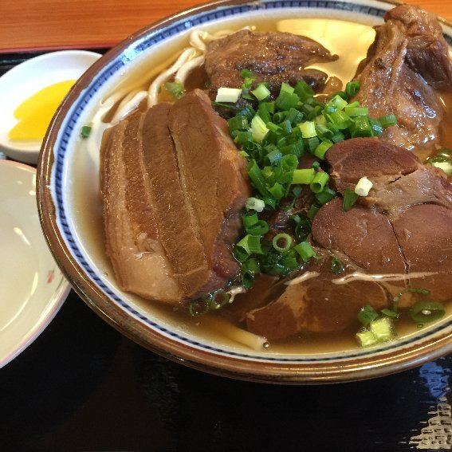
なんとも肉々しい......。あまりの肉々しさに圧倒されてしまいそう。
この時点でかなりお腹は空いていました。私は普段からよく食べる方です。それでもこの肉々しさをいざ目の前にしてみると、「私はこの肉に打ち勝てるか」という不安に駆られる。そして美味しそうな食を目の前にしてそのような不安を抱くのはなんとも心地よい一方で「食うぞ！」という気持ちを盛り上げてくれます。
まずは麺をひと口。麺を食べるためには肉を避けて隙間から箸を差し込んでつまみ上げなければなりません。丁寧に麺を数本すくい、口に運びます。
あっさりとしたスープが食べやすい。そして肉の旨味の匂いもします。食欲がさらにそそられる。
そしていよいよ肉に箸をつけます。大きな肉の塊を箸でつまみ上げ、かぶりつく！
その瞬間、私は獣になりました。そこにいたのは普 段 MacBoo k で文章を書いている文化人気取りの女ではなく、一匹の野獣。肉にむしゃぶりつき、肉を味わい、肉を噛み締める。そして口の中に広がる肉の旨味に、「フォー！」とため息交じりの叫び声をあげる。私の文明人としてのプライドが打ち砕かれた瞬間でした。
肉もしっかりと味付けがされていて、噛むと口の中にジュワッと旨味が広がります。
「肉、肉、肉......！」
頭の中が肉を求める欲望に支配される。肉を喰らい、肉の中からスープをすすり、飲み込む。それの繰り返し。
そして麺を食べ、一旦休んだらまた肉。
「肉々しい、本当に肉々しい......！」
肉を食べる喜び、肉で腹を満たす喜びを噛み締めました。
完食すると案の定お腹はパンパン。肉を存分に楽しんだ後の心はゆったりとした落ち着きを取り戻しました。それを人は「幸福感」と呼ぶ。
田そばの肉々しいソーキそばは私の忘れていた野生を呼び戻し、肉を喰らう喜びを思い出させ、最後には私を幸福感に浸しました。
沖縄到着二日目。この日は沖縄北部の美ら海水族館と古宇利島に行くことになっていました。
美ら海水族館は一説によると、一時期魚よりも人間の方が多いくらい人気だったとか。駐車場に入るために大渋滞が起こるとも聞いたことがありました。
最近人混みが苦手になった私。人混みに入ると酔ってしまって気分が悪くなることが増えました。加齢のために耐性がなくなったのでしょうか。そんな体質になってしまったため、正直美ら海水族館に行くのが少し躊躇われました。水族館自体は好きです。人混みが苦手なんです。
私たちが行くのは金曜日。平日ではあります。それでも人気観光地なので混雑が予想されました。一番理想的なのは開館直後のまだ空いている時間を狙うことですが、美ら海水族館の開館は朝の八時半。那覇から水族館のある本部町までは車で一時間半はかかります。開館と同時に行くには相当早起きをしなければならないし、それはそれで体に負担になる。
「なるべく早い時間を狙いながらも、早すぎる早起きはしない」
話し合いの結果、八時に那覇市内のホテルを出発することにしました。運転はやはり従姉妹次女の旦那さんです。
「駐車場大丈夫かな？」
などの不安はありましたが、仕方ない。
しかし行ってみると意外とすんなり駐車場に入れました。本館から多少距離はあるものの、水族館のある海洋博公園の駐車場です。五分くらい歩けば水族館に行けそうな場所。
「あれ、全然余裕だったね」
なんて言い合いました。
天気も良く、過ごしやすい日でした。沖縄では「快晴」というのが珍しいらしいのですが、この日は真っ青な空が広がっていました。
妹と「インスタ映え」とか言いながら写真を撮ったり。ちょっとだけ妹のポートレートを私が撮影したり。沖縄の風景の中でのポートレート撮影は誰もが想像できるような楽しさがあります。妹は普通の会社員で、モデルに関しては素人ですが、それでも人を撮るのは楽しかったです。
そもそも妹のファッションが「まとまった可愛さ」でした。花柄のワンピースにサンダル。髪の毛も暗めの茶色に染めてあって、我が妹ではありますが顔も可愛いと思います。そんな可愛い女の子が青い海と青い空に挟まれている......誰もが「きれいな画」を思い浮かべることかと思います。
一方私は沖縄旅行で何を着ていたかと言うと、最近ユニクロで買った「葛飾北斎浮世絵プリントＴシャツ」というもの。白いスキニーパンツとのコーディネート。メイクは黒いアイラインをしっかりと入れて、赤リップを塗っていました。自分ではかなり気に入ってはいますが、「尖っている」という自覚はある。こんなファッションなかなかしている人はいないだろうという認識もある。それでも私が「良い」と思って、着たいから着る。
ちなみにユニクロのサイトでこの「葛飾北斎浮世絵プリントＴシャツ」のレビューを調べると「五十代男 性 3X L 」などの口コミが目立つ。二十代の女性で着ている人はいない......。
可愛いけれど良くも悪くも「無難」な妹と、とにかくゴーイングマイウェイで尖りまくる姉。我々姉妹はそんな感じ。
入館チケットは事前にコンビニで購入してあったのでスムーズに入れました。
水族館の中も割と空いていました。想像していた人混みではない。水槽の前でのんびりと自分のペースを保ちながら魚を眺めるだけの余裕はある。もっと水槽に近づけないくらい混雑しているかと思っていたので安心しました。
私も写真をたくさん撮りました。しかし最近腕がめっきり落ちてしまった気がします。実は近頃あまり写真を撮っていない。昔は少し出かけるのにもカメラを持って歩いていたのに、最近は持ち歩かなくなってしまったし。だから水族館で写真を撮っていてもイマイチ感覚が冴えません。なんとなく己の感性の鈍りが悲しくなる。
クラゲを撮影した時、従姉妹次女の旦那さんが私の写真を見て「いいね」と褒めてくれました。正直私としてはクラゲは被写体である「クラゲ」という生物そのものが「面白い」から、ある程度適当に撮っても「面白い写真」になりやすいものだと思っていて。
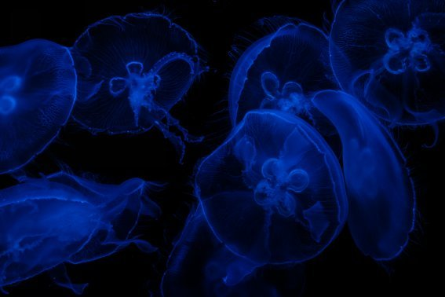
写真にしろ文学にしろ、「王道」というのがあってその王道から外れさえしなければとりあえず作品がまとまるということはよくあります。クラゲはものすごく太い「王道」なのでそう簡単に外れることがない被写体だと個人的には思っています。
もっと「水族館の風景」みたいな写真か、図鑑に載っているかのような魚の写真のようなものが撮れればいいのだけど。結局私はこの日ものすごくまとまっていない写真か、王道中の王道みたいなある程度適当に撮ってもまとまる写真しか撮れませんでした。
それでも自他共に「これはいい！」という写真は何枚かあって。
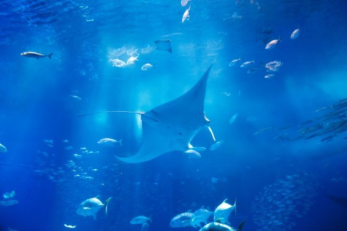
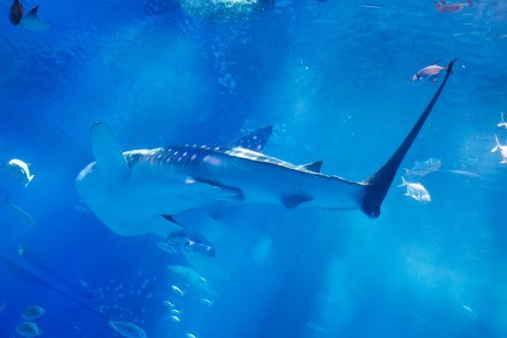
妹なんかにカメラのディスプレイを見せて自慢して、褒めてもらったりはしました。自分でも気に入っている写真ではありますが、悪い表現をすれば「素人が雰囲気の中でそれっぽく撮った写真」という見方もできます。
素敵な写真を撮るにはそれだけの練習が必要。最近すっかり怠って、感覚が鈍ってしまった。もっと言うと感性そのものが鈍っているかもしれません。それは恐ろしいことではあります。
水族館の外に出ると、ビーチを歩いたり他の展示を見たりしました。イルカショーも開催はされていましたが、時間の関係で見ることを諦めました。
お昼ご飯の後は「備瀬のフクギ並木」というところへ。前日のビオスの丘での水上ボートの案内員さんが勧めてくれた無料スポットです。美ら海水族館から車ですぐの場所。
そこをみんなでのんびり散歩して。
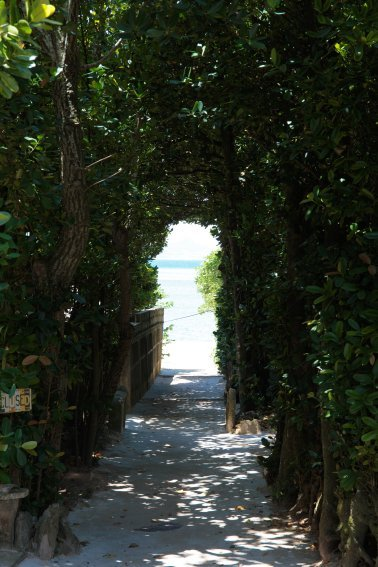
ここでも妹と「インスタ映えー」とか言いながら写真を撮って。
ゆったりとした時間の流れる場所でした。「急ぐ」とか「慌てる」という言葉が存在しないかのような場所。そのような場所をのんびりと歩いていると、心も静かになっていくような気がします。
日常の中でなかなかそういうことって難しいし、時間の感覚を忘れることが怖いことだってあります。私は散歩が好きなので、日常的に近所を歩き回っています。しかしそれも「どれくらい歩いた」とか、「あそこまではどれくらいの時間がかかる」とか知った上で歩いています。そうそう時間をオーバーすることはありませんし、計画的に散歩をすることだって可能です。
旅行だからこそ、時間の流れに流されるかのような散歩が楽しめました。
二日目後半戦。美ら海水族館と備瀬のフクギ並木を後にした私たちは古宇利島に行きました。
昔人気アイドルグループ の C M 撮影に使われたことで有名になった「ハートロック」を見に。車で橋を渡っていける島です。これまた話を聞いただけでも「インスタ映えしそう」なんてことを考えたくなる場所。
しかしくたびれていたのか、車の中では寝てしまいました。最初はウトウトと船を漕いでいたのがいつの間にか熟睡。
何かの夢を見ていたようですが、あまり覚えていません。車の中というのは私にとってとても眠たくなる場所でもあります。かといって深く眠れば眠るほど起きた時がすっきりしない。頭はボンヤリと起きていても、体がぐったりと疲れていてなかなか起きようとしないというか。
沖縄旅行前半戦も何度か車の中で眠ってしまいましたが、その度に体がだるくなってしまいました。それでも寝ようとしてしまうから「車の中」って不思議。
古宇利島に向かっている間、私は深い眠りに落ちていました。
すると突然妹に揺り起こされました。
「おいおい！」
あまりに突然のことで、頭がしっかりしない。むしろイライラしてしまう。
「何......？」
苛立ちながら車の外を見ると、真っ青な海の上を、本島と古宇利島をつなぐ橋が！
「おおっ！ インスタ映えしそう！」
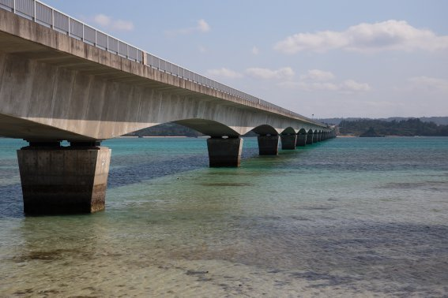
寝ぼけ眼の開口一番にそれ。決して「インスタ映え」を皮肉っているとかではありません。
「尖ってる」って褒め言葉のように使われたりはして私はよく言われますが、褒め言葉な割に大した恩恵を受けていません。尖っている相手というのは尖っているからこそ近寄りがたくもあるようで、「尖ってる」と言う人は称賛の意味も込めて言っているつもりですがそれ以上近寄ろうとはしてこない。だから私も褒められることはあってもなかなか深い意味で自分の仕事や活動を認めてもらえません。
そんな尖っていることに大したメリットも感じていない私は、逆に「インスタ映え」「大衆受け」みたいなことが「良いこと」のように感じます。ビジネスも芸術も結局大衆受けするものが「売れる」。ビジネスでも芸術でも「売れる」ことは活動を続けていく上で重要なこと。「インスタ映え」って全然悪いことじゃない。
だから私はこの旅行中に何度も「インスタ映え」と言っていますが、決して皮肉っているわけではありません。尖っていて誰からも認めてもらえない自分を自虐しているわけでもないし、大衆受けを称賛しているわけでもないけれど。少なくとも「インスタ映え」が悪いことだとは全く思っていない。
本島と古宇利島をつなぐ橋は、本当にきれいな風景でした。誰が見ても「きれい」と感想を述べたくなる景色。そういう景色こそが多くの人にとって必要なんです。
橋を渡って古宇利島に入ると「ようこそアダムとイブの島へ」と書いてある看板が目に入りました。最初は「おいおい、いくらハートロックが有名だからって、『アダムとイブ』は飛躍しすぎだろ」なんて思っていましたが、スマホで古宇利島の伝説を検索すると、それが「沖縄版失楽園」みたいな話であることが分かりました。
話の内容はこうです。
《大昔、古宇利島に裸の男女が降りてきました。男女が島で生活をし始めた頃、空から毎日餅が降ってきました。二人はその餅を食べて暮らしていました。しかし次第に二人は「餅が空から降ってこなくなったらどうしよう」と不安になりました。そこで餅を蓄えるようになりました。二人が餅を蓄えるようになると、空から餅が降ってこなくなりました。そこで二人は浜で食べ物を得るために労働をしなければならなくなりました。ある日砂浜でジュゴンが交尾をしているのを見て、二人は男女に体の違いがあることに気づき、葉っぱで恥部を隠すようになりました。この二人が琉球人の祖先です。》
この話は興味深く私の胸に刺さりました。
「この先どうしよう」
なんて不安に思って、餅を蓄えたら空から餅が降ってこなくなった......。
お金の不安には頻繁に襲われるし、他にも仕事やら今の家庭やらに何かと執着しがちな私。
「執着するとお金も幸せも逃げていく」
そんな言葉を思い出して、なるべく執着を捨てるようにはしているものの、それでも執着してしまう。常に「私には〇〇がない」みたいな飢えを感じている。そういう自分が浅ましくて嫌いになることもある。
だからこそ、この男女の餅の話、そしてそれ以降の労働の話は私に刺さりました。
......そんなことを感じたところで、安定した収入が毎月入ってくる会社員の従姉妹次女夫婦と妹には理解されないだろうから黙っていましたが。
目的のハートロックは入り口の橋とは島の反対側にありました。駐車場から砂利道を歩いて浜辺へと向かいます。
この砂利道、結構ゴツゴツしていて、裸足で歩くのが大変そう。......大変そうにもかかわらず、なぜかすれ違う砂浜から帰ってくる人たちが皆裸足。砂利道、岩の道を痛いのを我慢しながら裸足で歩いてくる。
旅行ということで私は動きやすい靴を選んできました。靴下を履いてスニーカー。砂浜用にビニールのスリッパを愛知から持ってきてはいたものの、この日はホテルに置いてきてしまって。
「今日は砂浜をスニーカーで過ごすか」
そのつもりでした。
それにしてもすれ違う人、すれ違う人が裸足。ゴツゴツの岩の上を、裸足で歩いてくる。それが不思議で仕方ありませんでした。
そして砂浜につきました。干潮時間で、ハートロックまで歩いて行けました。遠浅の岩場がむき出しになっています。
歩こうと思えば歩ける。
ハートロックにも触れる。
そう、スニーカーと靴下さえ脱げば！
......脱いじゃいました。
裸足になって海の上を歩いちゃいました。
すれ違う人たちが裸足だった理由がよく分かりました。
つま先が蒸れる靴を脱いで、足を海にひたす。
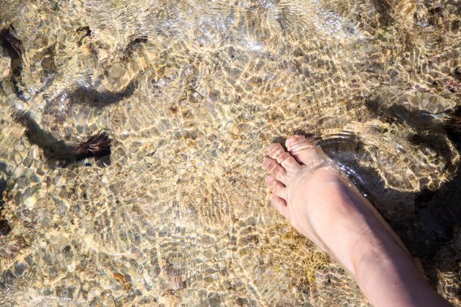
天気も良く、暑い日差しの下で、足首から下が海水につかる。
とても気持ちいい......。
私は遠浅の海を転ばないように気をつけながら歩き回りました。
沖縄ではすでに海開きは過ぎています。行く前は「まだ泳ぐには寒いかな」と疑っていましたが、意外と泳げそうな暑さでした。
海水が足先を撫でます。海の風が私の髪の間をすり抜けていく。
心の中に澱んでいたものが、透き通っていくかのような。
何かの力が足の裏から体の中に流れ込んでくるかのような。
自然に触れるとそんな気分になるから不思議です。
......なんて私が海の大自然を満喫していると。
「お姉ちゃん、坊ちゃんがおしっこに行きたくなったから、従姉妹次女一家先に戻ってるって」
坊ちゃんはまだまだ三歳。自分がいつトイレに行きたくなるかなんて分からないのも仕方がない。それにしても育児って大変そうだ......。
従姉妹次女は「詩織ちゃんたちはもっとのんびりしててもいいよ」と言ってくれたそうですが、それに甘えるわけにもいかず。私たちも駐車場に戻ることにしました。
私は裸足で、あのゴツゴツの砂利道を歩きます。
痛い......想像していた通り、痛い。
それでもあの海でエネルギーを感じられたので良しとしておこう。
古宇利島を後にして、那覇へと向かいます。この日の夜は従姉妹長女一家、今まで一緒に過ごしていた従姉妹次女一家、そして翌日に式を挙げる従姉妹三女夫婦と私と妹で食事をすることになっていました。
従姉妹長女一家は三人兄弟。長男、長女、次男の構成ですが、まぁ元気なこと。
従姉妹次女の坊ちゃんはとてもシャイボーイで、私もなかなか馴染んでもらえませんでした。一緒に過ごして二日目にしてようやく名前を呼んでもらえたという感じ。
しかし従姉妹長女一家のチビ三人は元気元気。ほとんど血のつながりもないようなものである私や妹でも、物怖じせずに突っ込んできます。普段からなかなか会うこともないのに、久しぶりに会っても膝に飛び乗ってくる。
そして叔母にあたる従姉妹三女に対してはさらにものすごいらしい。会えば「遊んで遊んで」と従姉妹三女にまとわりつく。
どうしても「おばちゃん」という存在は甘えたくなります。「お母さん」は愛してくれるし大好きなのだけど、時々怒られたり厳しくされることもある。でも「おばちゃん」という立場は家に行けばもてなされ、甘やかされる。私の小さい頃も「伯母さん」はそういう存在でした。
だからよく分かります。従姉妹長女のチビ三人が、叔母にあたる従姉妹三女にまとわりつくのが。
食事の会場に行くと、すでに従姉妹三女の周りにはチビ達が戯れていました。抱きついたり飛びついたりしてはしゃぎ回る。従姉妹三女もそれをちゃんと相手して。
今回の食事で私は初めて従姉妹三女の旦那さんを見ました。なかなか爽やかなイケメンでした。
本来ならば従姉妹三女と語り合ったり、旦那さんが挨拶したりする場なのですが、チビたちがいるためそれどころではない。一応会話は成り立っているものの、チビたちの存在感が半端ない。この会のメインである従姉妹三女夫婦の周りには常にチビたちがいて、遊んでいる。それはそれで楽しくていいかなと思うし、なんだかあの三姉妹らしいと言えばらしいので、見ている分にはほのぼのしました。
従姉妹三女は私と妹の座っているところまで来てくれて、いろいろ話そうとしてくれました。式に先立って沖縄に旅立った従姉妹三女に、私も「沖縄の生活はどう？」などと聞きたい話はいっぱいありました。
「一緒に暮らし始めたけど、あんまり『新婚』って感じがしない」
従姉妹夫婦は恋人として付き合っていた期間も長かった模様。お互い慣れ過ぎていて、いざ「新婚さん」として一緒に暮らし始めたものの、イマイチ「初々しさ」がないと言っていました。
その気持ち、私もよく分かります。私も結婚する前に七年の付き合いがありました。その間に一緒に旅行に出かけたりして、「何日も二人で時間を共有する」ということはしてきました。だからこそなのか、いざ一緒に暮らし始めると「初々しさ」「新婚さん感」が一切ない。
もっとお互いの生活の中の些細な違いにときめいたり、逆に苛立ったりするのが「新婚さん」だと思っていました。
しかし、私にはそれがなかった。
そして、従姉妹三女にもそれがないとのこと。
「なんでこんなに『新婚感』がないんだろう」
「付き合いが長かったからだろうか」
二人でそんなことを言っていました。
しかしやはりここに来てもチビ三人の存在感が半端ない。私たちが語り合っているにもかかわらず、叔母にまとわりついたり登ったり。次第に隣にいる私も登られるようになりました。
膝の上に乗ってきたので、ユッサユッサと揺すると笑う。こちょこちょとくすぐると笑う。指をこちょこちょと動かして見せただけでも、触ってないのに笑う。
チビたちが従姉妹三女に集団で群がり、抱きついていたので、私も一緒に抱きついてみました。
「わー！ やめろー！ お前らー！」
従姉妹三女の笑い声と悲鳴があがります。
そして最後に私が、
「おめでとう」
と言って、強引にオチをつけておきました。この場合、ごちゃごちゃしていても「おめでとう」と言っておけば強制的にオチがついてなんと なk なる。
それでも従姉妹三女とはいろいろな話をしました。沖縄で生活を始めて一ヶ月ほど。体調はどうだとか、慣れたかとか。彼女はダイビングが趣味だから、これからの趣味生活への希望に満ちた話だとか。
「元気にやってるよ」
従姉妹三女のその言葉は強がりでもなんでもなく。本当の言葉として響きました。だから安心しました。
沖縄に嫁ぐとなると、いろいろ大変そうです。食べ物だって違うこともあるし、文化だって違う部分がある。「時間の感覚も違う」ということも聞いたことがあります。季節感だって愛知とは全く異なる場所です。
友達も最初はいません。一人で嫁いでいくのだから。
私だけでなく、たくさんの人が同じような心配をしていたと思います。一番は彼女の親である伯父さんと伯母さんかと。
それでも従姉妹三女はとても元気そうでした。
食事はチビたちのおかげでとても楽しく終わりました。真剣に話し合うよりも、チビたちに構いながらの方が、笑っていろいろなことが話せたと思います。
翌日の夕方はいよいよ挙式。どんな式になるのか、ワクワクしながらその夜は眠りにつきました。
沖縄三日目土曜日。この日はいよいよ従姉妹三女の結婚式です。しかし式は夕方にホテルで行われます。午前中は時間があるので、観光をすることにしました。
ここで一旦チームに分かれました。私と妹チームと、従姉妹次女一家チーム。従姉妹次女一家チームは坊ちゃんがモノレールに乗りたいらしく、私たちを付き合わせるのも申し訳ないとのことで別行動をすることになりました。私も沖縄のモノレールにはじっくり乗ってみたかった気持ちもありましたが。それでもずっと一緒にいるのも疲れるし、私も妹とのんびり歩きたいという気持ちもあったし。
だから私と妹は一緒に国際通りに行きました。お土産を見て回ります。
普段自宅の書斎に引きこもって仕事をしている私。会社員時代は旅行に出かけると一緒に働いている人たちにお土産を買ったものですが、今ではそのような相手もいません。さらに頻繁に会って話している友達というのもいない。「友達」と呼べる存在の人はいますが、定期的に会っていたり、遊ぶような人はいません。これも自宅で仕事をしている人間あるあるなのかもしれません。
そして私の実家の人間も沖縄に来ている今、「実家にお土産を買う」という必要もなく。
結局私が付き合いとしてお土産を買っていく相手は夫と夫の実家だけ。かろうじて沖縄から帰った後に友達と会う予定があったので、彼女にも何かを買っていこうと思った程度。
さらにお土産屋さんというのは値段が高い。沖縄のお土産の代表格として挙げられる「ちんすこう」も、家庭用の簡易包装のものならばスーパーでもっと安く買えます。お土産屋さんに並んでいるお土産用の箱に入ったちんすこうはかなり割高。
夫には「俺の実家へのお土産は箱じゃなくて中身の量にこだわってくれ」と言われていたので、お土産屋さんに並んでいるお土産用のちんすこうに用はありません。
一方妹は会社員。今回の沖縄旅行では有休を使っています。ともなると、付き合いとして「お土産を買って行った方がいいかな」という気にもなってくるようで。それでも妹は国際通りで買わなくても、空港で買えばいいかと思っていたみたいで結局二人で歩いただけでした。
しかしお土産屋さんが立ち並んでいると、どうしても「沖縄のお守り」とか「沖縄のお守りアクセサリー」とかが目に入ってくる。
そしてなぜかそういうものに吸い寄せられていく我々姉妹。
沖縄のお守りを手にとって、吟味して、今の自分には何が必要なのかを考えてしまう。私は結婚もしたので家庭運だとか仕事運だとか金運だとか。婚活中の妹は恋愛運だとか。今の生活に漠然とした不安もあるのでそういうのを解消してくれるようなお守りを探してしまったり。
「人生に不安しかないから、旅行に来るとこういうお守りとかに惹かれてしまうんだよね」
自嘲混じりのため息をついて私が言いました。
「分かる。そして買って満足してしまう」
さすが我が妹。
人生に不安しかない。だから何かにすがりたい。そして旅に出ると財布の口が緩む。だからお守りを買いたくなってしまう。とにかく何でもいい。この不安しかない人生に、何か明るい道標が欲しい。
悩み大きアラサー姉妹です。
「何かにすがりたいんだよね、私たち」
「そうなんだよね。すがってないと自分を保てないし、毎日やっていくのもしんどい」
なんてことを言っていると、目の前にアクセサリーショップが。黄色い看板に黒字で大きく「社長も来た！」「芸能人御用達」「沖縄のエナジー」などと書かれている。
「入る？」
この会話の流れで妹に尋ねました。
「負けた気になるからやめておく」
妹はそのアクセサリーショップの前を通り過ぎました。
それでもアクセサリーやらにはなんだかんだで惹かれてしまい。立ち寄って眺めて、「これいいかな？」なんて話し合って。お守りでなくても妹は元からアクセサリーが欲しかったらしく、何かいいものがあれば買いたいと思っていたようです。
それでも結局何も買わず。
時間が来て、従姉妹一家と合流して車に戻りました。
私は疲れていたのか車の中で爆睡。他の人たちは道の駅に行っていたようですが、私は車の中で寝て待つことに。
沖縄三日目。子供の頃は一日中遊びまわっても次の日には元気になれたのに。二十八歳の体はそうはいかないものか。......体が老いるのって意外と早い。もっと体力をつけなければ。
式のあるホテルに着いてからも、多少時間があったのでチェックインしてから仮眠をとりました。
この沖縄旅行のメイン、従姉妹三女の結婚式が始まります。
沖縄に嫁ぐ従姉妹三女夫婦の結婚式は「リゾート婚」ではなくホテルでの人前式と食事。そして親族だけが集まる家族婚。
仮眠から起きて、私たちも式に参列する準備をします。
そこで気づいた忘れ物。なんと私は結婚式のバッグを忘れていました。式場に持って入れるようなおしゃれで華やかなバッグを持ってきていない。まさか観光中に持ち歩いていたトートバッグなんか持込めるわけがない。
幸い私は一眼レフカメラを持っています。これを持っていれば「手ぶら」な雰囲気もなくバッグがないことをごまかせるかな......と思い、しれっとカメラだけ持って式場に行きました。結局最後の最後まで私がバッグを持っていなかったことは私がバッグを忘れたということを知っている妹以外誰にも気づかれませんでした。
式場で案内されたテーブルに着きました。私の一家と、従姉妹の両親つまり私の伯父と伯母。そして従姉妹にとっての母方の叔母である人と一緒のテーブル。
そのテーブルを囲む両親や伯父たちを見て、なんとなく寂しくなりました。皆びっくりするくらい老けている。お父さんもお母さんも、お父さんのお兄さんである伯父さんも。肌がたるんでいたり、シワができていたり。
私が二十八歳になって、子供がいてもおかしくない年齢。つまりお父さんもお母さんも「おじいちゃん・おばあちゃん」になっていてもおかしくない年齢。伯父さん伯母さんに至っては長女と次女の孫に囲まれているわけで立派な「おじいちゃん・おばあちゃん」なわけで。
そうやって思うと、急に「人間は老いる」という事実が切なくなりました。
だからこそ、今できることをやっていかなければならないと。私自身は自分の幸せを突き詰めて生きていかなければならないし、親に対しても孝行できることはどんどんしていかなければ。人間は老いる。いつか死ぬ。だから今目の前にあるやるべきことをこなしていかなければならない。
不謹慎かもしれないけれど、従姉妹三女の結婚式で、ほんの少しだけ「当たり前の事」で切なくなり、だからこそ私にはやるべきことがあるのだと感じました。
式が始まりました。まずは新郎と新婦の登場。式場内のステージ上で行われる人前式。二人で誓いの言葉を読み上げたり、指輪を交換したり。
誓いのキスのシーンでは、本人たちが思いっきり照れ笑いを浮かべていて、私の方がなんだか照れちゃいました。
人前式が終わった後は、食事をしたり思い 出 DV D を見たり。
本来ならば従姉妹三女を祝福し、新しい夫婦の幸せを祈る場所。それなのに私はどうしても寂しくて切なくなりました。
式の最中に参列した親族の紹介がありました。私も相手の親族に紹介されます。
「従姉妹の〇〇（新姓）詩織です。面白い子で、いつも笑わせてくれます」
「面白い子」ってなんだ、「面白い子」って。まるで「変な人」をオブラートに包んで表現しているかのようじゃないか......とちょっとだけ思ったけれど、それでも従姉妹三女の中で私は「面白い人」として映っていたのかと感じて。ちょっとだけ卑屈にもなったけど、ちょっとだけ誇らしくもあり。
小さい頃から年齢が近いこともあってたくさん遊んできた従姉妹です。喧嘩もしたけれど、なんだかんだ仲良くしてきました。大人になってからも一緒に遊んだり、しゃべったりしてきました。
その従姉妹三女が沖縄に行ってしまう。いく ら LC C が名古屋と沖縄の間を結んでいたとしても、東京よりも安く行けたとしても、やっぱり距離としては遠い場所です。そこに従姉妹三女は行ってしまう。それが寂しくて。
式の最中、おおよそ私はハッピーな気分でした。しかし時々胸を締め付けられるような切なさに襲われました。
そして式の山場である新婦の両親への手紙。泣いている伯父さんや伯母さんを見ていて、私も泣きたくなって。従姉妹三女は沖縄に嫁ぐまではずっと両親と一緒に暮らしていました。一緒に暮らしていた娘が沖縄に行ってしまうともなると、親である伯父さん伯母さんも寂しいだろうなと思います。
そして、私の両親もそんな寂しさがあったのかなと想像してしまいました。別に遠くに住んでいるわけではないし、会おうと思えばすぐに会えるし、実際月に何度か会ってるし。それでも私は結婚をして行政的には名字が変わって。大好きな人を選んでその人と歩んでいくことを決めて。
親としてはもちろん嬉しいことではあるけれど、それでもやっぱり寂しいものでもあるのかな。......そんなことを、泣いている伯父さん伯母さんを見ながら感じて。
切なくなって、泣きたくなったけど、ここでそんな涙を流すのは従姉妹三女に申し訳なくて。だから泣くのをこらえて祝福して。
沖縄に嫁ぐことについて従姉妹にいろいろ聞いたことがあります。二人で食事をしていた時のこと。
「沖縄に嫁ぐのって、不安じゃないの？」
文化も気候も違う土地、友達も最初は一人もいない土地に、一人で行く従姉妹に私は尋ねました。
その時の従姉妹の返事。
「私は自分が人に恵まれているっていう自信があって。今までもいろんなところに行って生活をしてきたけど、その度にたくさんの人に巡り合えて、助けてもらったり楽しい思いをさせてもらえてきた。だから今結婚するために沖縄に行っても、私は素敵な人たちに巡り合えて、幸せになれるんだと思う」
過去の経験からこれから先の未来を想像することに意味はあるのか、という意見もあるかと思います。けれども私はこの従姉妹三女のセリフがとても胸に響きました。「帰納法的自信」とでも言うのか。「今までが大丈夫だったから、これからも大丈夫」という自信。そういう自信っていざという時に本人を本当に助けてくれたり導いてくれるものだったりします。それは私自身が「経験して」感じたことでもあります。
だから果たして過去の経験が未来に影響を及ぼすのかどうかはその真実は分かりませんが、それでも従姉妹が「今まで私は恵まれてきたからこれからも大丈夫」と言っているのには私も納得させられてしまう。従姉妹のこの「帰納法的自信」はきっとこれからも彼女を本当に助けて導いてくれることでしょう。
いよいよ式が終わるという時、従姉妹三女のその自信に満ちたセリフを思い出しました。
だから彼女はこれからも大丈夫なのだと、私は思いました。
恐らく従姉妹三女の「根拠のない自信」の話を聞いた誰もが、「この子なら大丈夫」と思って彼女を祝福していたのだと思います。
式が終わって、従姉妹三女に見送られて式場を出ます。
最後の「未婚の女性」である妹には従姉妹三女からブーケが渡されて。
「幸せになってね。体には気をつけて」
そう言って、握手して、従姉妹三女と別れてきました。
部屋に戻って、シャワーを浴びて、寝る準備をして。
翌日も観光の予定があります。今度は一人でレンタカーを借りてドライブをする旅。だから早く寝なければ。
寝る前にウトウトしながら幾つかのことを考えました。
今目の前にある「やるべきこと」をやる。自分が幸せになるために行動する。親孝行をする。
頻繁に考えていることだけど、この夜だけは特別。この夜に考えたことはしっかりと頭の中に刻まれて、私を導いてくれることだろうと願いながら。
式の翌日の日曜日。この日から沖縄旅行も後半戦。私の一人旅が始まります。
レンタカーを借りて沖縄を観光。「時々セルフポートレートも撮れたらいいな」と思って、三脚も持ってきていました。それこそ新しいワンピースも用意したりして。撮影するなら自然の中やビーチに行けたらと考えていました。
複数人でワイワイ旅行をするのも好きですが、一人で旅をするのも好きです。自分だけのペースでのんびりと観光をしたり食事をしたり。一人の時間に色々なことを考えたり。一人暮らしの時は「一人で暮らすの寂しい」と感じていたものの、一人旅で「一人の時間」を過ごすのはなかなか楽しいものがあります。
一日目の行き先は「沖縄の北端」と考えていました。
前に一緒に仕事をした人と、仕事の休憩中にグーグルマップを見ていました。「ここに行ったことがある」などの自慢話をお互いにしたりして。その時その方がぽそっと言ったこと。
「地図の先っぽって気になって行ってみたくなる」
その気持ち、よく分かります。半島の先っぽとか、東西南北の「端」とか。そういうところって地図を見てるだけで妄想が高まってくる。
「この先っぽには何があるのだろうか」
なんて探究心が掻き立てられる。
だいたいそういうところって都会から離れているど田舎で何もないことが多いのですが、それでも「行ってみたい」という気分になります。そして実際に行ってみると本当に何もない場所ではあるもののものすごく達成感のある旅になったりする。
「地図の先っぽ」を見て私もあれこれ想像してしまう性格です。
そういうわけで、この沖縄旅行でも「沖縄本島の北の先っぽ」に行ってみようと思いました。
レンタカーのお店に朝九時に予約を入れておきました。式があった那覇市内のホテルからモノレールに乗ってお店に行きます。
お店に着いたら一通り説明を受ける。車をぶつけたり傷つけた場合はどうなるか。その時の保障はどうなっているか......などなど。
過去に二度自分の車をぶつけたことがあります。それでも私は最近ゴールド免許になりました。ゴールド免許って本当にいい運転をする人と、滅多に車に乗らない人の二パターンに分かれます。私は後者。そして車をぶつけたことがある。
そしてこれからあまり慣れない車を運転する。......ものすごく緊張します。
だから入れる保障は全部入っておく。
そして結構しつこく確認する。車が用意されて、車の確認をして、車に乗る直前まで保証のことを確認する。
お店の人、絶対気分悪かっただろうなと思います。そういうサービスとはいえ、これだけ自信ないドライバーに車を貸す上に、ドライバーはいざというときの責任逃れの手段を徹底的に用意しようとしている。嫌な奴。
用意された車は三菱自動車の赤い軽自動車でした。運転に自信のない女一人旅には丁度いい車です。
法定速度を超えると「速度超過しました。安全運転を心がけましょう」と言ってくれます。必要以上に加速して、危険な運転をしなくて済みます。......そもそも私はあまりスピード違反なんてしない人間ですが。愛知県内でもバイパスを法定速度で走る、迷惑極まりないドライバーであるという自覚もある。
さらにナビで設定した目的地に着いた時は運転の振り返りまでしてくれる。
「運転お疲れ様でした。所要時間は○時間○分でした。アイドリング時間は○分でした。速度の安定した運転でした。エコ運転でした。次は急ブレーキのない運転を心がけましょう。お疲れ様でした」
ここまでくると「鬱陶しいわ！」と思ったりもする。なんともお節介な車でした。
とりあえず沖縄旅行後半戦の一人旅は、このお節介な車と旅をすることになりました。
「北端の風景や、ビーチを満喫する！ セルフポートレートも含めて素敵な写真もいっぱい撮る！」
胸を高鳴らせてレンタカーショップを出発しました。
那覇市内から沖縄北端にある辺戸岬へ。高速で許田まで行き、そこから名護を通過して海沿いに北上していきます。グーグルマップでは二時間ほどと案内されますが、道中で休憩をしたりしているとなんだかんだで三時間ほどかかりました。
ドライブ中に立ち寄るコンビニが地味に好きです。コンビニなんて全国各地どこにでもあるものですが、それでもドライブ中のコンビニは特別。立ち寄ってトイレに行って、飲み物を買う。たったそれだけのことなのに、なんだかウキウキしてしまう。
しかも沖縄のコンビニには愛知ではなかなか見ないものも売っています。さんぴん茶やグァバ茶などのペットボトル飲料には何度もお世話になりました。
余談ですが沖縄最終日の昼と夜の食事はファミリーマートの沖縄限定おにぎりでした。食欲があまりなかったのでぱぱっと済ませられるものを探していた時に見つけたものです。スパムとたまごが入っていたり、ハンバーグのようなものが挟まっていたり。こちらも愛知では味わえないおにぎりなので、いろいろな種類を食べて楽しみました。
さらにファミリーマートには「ファミマ限定泡盛」なんていうものも売っている。私はお酒が飲めないのでこちらは夫と夫の実家に買って帰りました。飲んだ人たち曰く、「とても飲みやすくて美味しい。しかしアルコール度数が高い」とのこと。
そんなこんなで北端を目指す途中でも沖縄のコンビニを楽しませてもらいました。自動車学校で「一時間に一度休憩すべし」と教わったのもあって、一時間に一度くらいの頻度でコンビニに立ち寄る。その度にトイレに行って、さんぴん茶を買って、軽くストレッチをして。
しかしこの日は雨。しかも雷雨。ザーザー雨が降ってるし、ゴロゴロ雷鳴ってるし。天気に恵まれない日でした。
「これはビーチは無理かな」
運転中に窓の外の海を眺めると、なんとなく水が濁っているようにも見える。理想はやはり「青い海」。雨だとそれも期待できなさそう。
「とりあえず北端の地に行ってからその先のことは考えよう」
運転をしながら考えました。
そして雨が止んだ瞬間にちょっとだけ車を降りてセルフポートレートを撮影したり。
そしてようやく辺戸岬に到着。小雨になっていたものの、空を見るといつ激しく降り始めてもおかしくなさそう。
そして天気が悪いからなのか、そもそも人気がないのか、辺戸岬は観光客が少ない。「北端の地」ともなると行くのに時間がかかったりするので、観光としてはあまり人気が出ないのでしょうか。それにやっぱり「地図の先っぽ」というのは「何もない」ということも珍しくなく。この辺戸岬の周辺にもあまり休憩できたりする場所がなかったように思います。最寄りのコンビニもかなり遠い。
しかし風景は楽しめました。何だか独特な風景でした。私はあまり地学に詳しくはないのですが、岩が今まで見たことがないような岩のように感じました。お父さんの趣味の影響で登山などをしたり、あちこちの海岸などに出かけて「岩」というのはたくさん見てきたはずです。
しかしこの沖縄の北端の地の岩はなんだか違う。何が違うのかはっきりとしたことは言えないのですが、直感で「本州とは違う」と思いました。
海に突き出した崖とかもあったけれど、これも本州のものとは何かが違う。
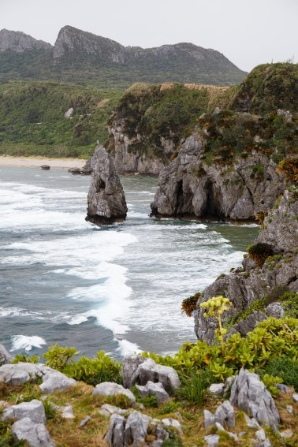
この違和感の正体は何なのか全く分かりません。旅フィルターなのか、それとも本当に違うのかは帰ってきてからも分からないままです。
そんな風景の中でセルフポートレートを撮影しました。
楽しかったー。
この写真、撮っている姿を少し想像してみてください。使っているカメラは一眼レフカメラ。三脚は一眼レフカメラを支えられるだけのしっかりとしたもの。太さもあります。
世間一般の人から見ると「一眼レフカメラを使っている人は写真が上手」とか「こだわって写真を撮ってる」などのような印象を持たれます。例え使っているカメラが初心者向けの機種であっても、一眼レフカメラを持っているだけで何も知らない人から「プロの方ですか？」なんて聞かれることも。そして一眼レフカメラをパッと見てそれがどのクラスの機種なのか、分からない人の方がこの世の中には圧倒的に多い。だから例え初心者向けのカメラを使っていても、「写真を撮るのが上手な人だろう」という扱いを受けてしまうものです。
そんな風に一眼レフカメラが認識される世の中で、私は一眼レフカメラを三脚に据えて自分の写真を撮っている。
「セルフポートレート」なんてカタカナ横文字でカッコよく言ってるけれど、その実は「自撮り」でしかなく。スマホの自撮り棒で撮っているよりも、こだわって撮ってるように見える分余計に目立つ。
旅先でのセルフポートレートというのはなかなか面白いものが撮れたりはします。しかし目立つ。
旅行をしている人間は一人。女一人旅で一眼レフを使っての自撮りをしている。
「変な目で見られるだろうな」
という自覚はもちろんある。
もちろんあるけれど、ここは気にしていてはいけない。別に悪いことをしているわけではない。普通の人がスマホで自撮り棒を使ってやっていることを、ほんの少し発展させただけのこと。目立つかもしれないけれど、他人にネガティブに囁かれる筋合いはありません。
そうやって割り切って撮影をする。ここで変に「他人の目を気にしてます」みたいな雰囲気を出す方が余計に恥ずかしい。
「自撮りしてるのよ。見て分かるでしょ。今のご時世そんなに珍しいことではないわ！」
それくらい開き直って撮影をします。
誰にも迷惑をかけていないし、その結果楽しめて気に入った写真も撮れたのでいいことづくしです。そして意外とこういうのって受け入れられたりもする。知らない人に「いい写真撮れましたか？」なんて声をかけてもらえて、褒めてもらえたり。
こういう風に「開き直れる強さ」って、持っているといろいろお得。
撮影を終えて車に戻ると雨は本降りになっていました。海は諦めるしかありません。
どこに行こうと悩んで、地図に載っていた沖縄の聖地「大石林山」に行くことにしました。
ザーザー降りの雨の中、私は辺戸岬の直ぐ近くにある沖縄の聖地「大石林山」に行きました。
正直、お腹も空いていたのでご飯が食べたかった......。しかし検索しても近くにいい感じのお店もなく。コンビニもなく。というよりも辺戸岬から大石林山があまりにも近いので、食事をしようとすると遠回りになってしまう。ならば少し我慢して、先に観光してしまおうということに。
この日私はあろうことか傘を忘れていました。というよりも、この旅そのものに傘を持ってきていませんでした。特に根拠もなく、過去の実績もないのに「私は晴れ女だから」みたいな気分になっていました。「傘」という発想が全くありませんでした。
この際カメラ以外濡れることは恐れない。それくらいの気合。
しかし大石林山で車を停めると駐車場のおじさんが傘を貸してくれました。施設内にもいたるところに傘が置いてあって、いつでも気軽に使えるようになっていました。雨が頻繁に降るのでしょうか。
駐車場で入場料千二百円を払ってスタート地点までバスで送ってもらいます。
大石林山のコースは三つ。車椅子でも観光できるバリアフリーコース。森林の中を歩くやんばるコース。そして変わった形の岩を見られたり展望台が楽しめるコース。
私は三つ目のコースを行くことにしました。もちろんここでもセルフポートレートを撮影するつもりです。
普段からそこまでセルフポートレートを撮っているわけではありません。スマホで自撮りもあまりしません。ただ、今回の旅では行く直前になんとなくひらめいて「旅行中に撮影しよう」という気分になっただけ。なぜそうひらめいたのかは全く分かりませんが、セルフポートレート撮影はこの沖縄旅行後半戦の目的でした。
そして大石林山で「自然の中でのセルフポートレート撮影」を楽しみました。
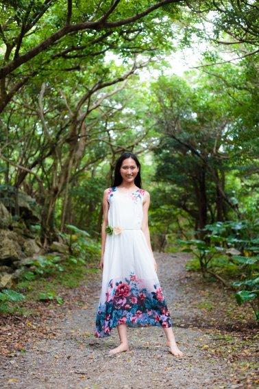
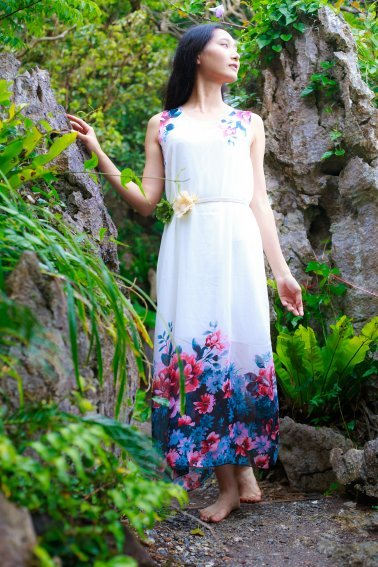
もちろん岩の写真も撮りました。
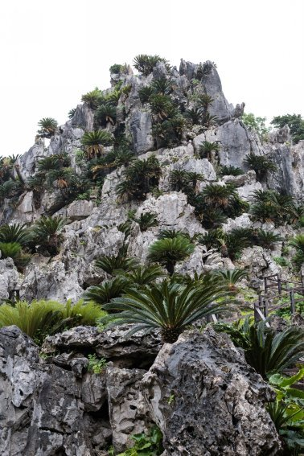
雨雨雨。しかも結構激しく降っている雨。
それがかえって自然の風景をよりよく見せてくれるというか。
「木に雨が降り注ぐ」
なかなか画としては美しいテーマだと思います。そんな中でセルフポートレートが撮影できて満足。
そして「聖地」と言われるだけあるのか、なんだか体の中がポカポカしてきました。体の真ん中から何かがじわっと溢れ出てくるかのような。温かいものが湧いてくるかのような。自然頭の中がポジティブな考え方で埋まるようになりました。
「何だかこれから先、いろんなことが起こるかもしれないけど上手くいく気がする」
そんなようなことをつぶやきたくなる。
お土産屋さんの立ち並ぶ通りでお守りに吸い寄せられていく常に何かにすがりたいと思っているような女が、「聖地」だとか「パワースポット」と呼ばれる場所に来ると一人で勝手にポジティブになるものです。あれこれ悩んでいる割に意外と単純。
展望台では晴れていれば鹿児島が見えるらしいけれど、雨なので見られず。
天気の影響もあってか全体的に観光客は少なめでした。だから気兼ねなくセルフポートレートも撮影できました。
話によると、二〇一八年七月頃に石の博物館ができるんだとか。
自然も満喫できたし、「大地のエネルギー」らしきものも感じられたし、セルフポートレートも撮影できたので大満足でした。
大石林山を後にし、一旦名護に向かいました。道中窓から見た海は濁っていて。雨はザーザーと降っていました。
「明日は晴れて、ビーチに行きたいな」
そんなことを天に祈ったり。せっかくの沖縄旅行なのだから、青い海を満喫したい！ 青い海をバックにセルフポートレートを撮影したい！ しかし天気ばかりはどうにもできない。天に祈るしかないので、祈りながら車を運転する。
空いた時間に何をするかということですが、お土産を買うことにしました。今回の旅でお土産を渡したい相手は夫、夫の実家、夫の祖父母。
なぜ夫の祖父母にもお土産を渡すのかというと、夫の実家の隣に住んでいてなんだかんだで近い関係だからというのもあります。しかしそれ以上に重要なのは、旅行に来る一週間前に私は「誕生日祝い」ということで彼らからお金をもらっていたということ。きちんと「お祝い」と書かれた封筒にピン札で一万円入れられていました。
ありがたく頂戴して、今回の旅で使おうと、お札に折り目をつけることなく封筒ごと持ってきました。お金を全て普段使いのお財布に入れておくのはなんとなくリスクが高い気がするので、その封筒と分けて持ち歩いていました。
「誕生日祝い」としてお金をもらったので、お礼もしたい。そういうわけで沖縄に来る前から「夫の祖父母にもお土産を」と考えていました。
夫へのお土産、つまり自宅へのお土産は簡易包装のもので構いません。夫の実家に対しても、夫が「うちには箱よりも中身の量を重視してくれ」と言われたので、言われた通りに解釈して簡易包装のものを。付き合いも長いので、そこまでかしこまる必要もないかなとも思っています。
しかし夫の祖父母に対しては「お礼」という気持ちもあるのと、そこまで深い関係ではなく結婚が決まってからまともに会話をするようになったくらいなので箱は重要。
そういうわけで、「自宅用簡易包装の沖縄土産」と「贈り物用箱に入った沖縄土産」の両方が効率よく買えそうなイオンに行きました。
沖縄四日目。体もだいぶ疲れています。この日は一日中慣れない車を運転していたのもあって体がかなり重たくなっていました。
「休憩もしたい。買い物もしたい」
イオンなんて愛知にもあるのに、なぜイオンを選んだかというとそういった理由もあります。イオンに行けばとりあえず安心できる。「ざ・安定志向」。
それでも名護のイオンは品揃えが愛知とは違いました。夫から「コーレーグースとスパムを買ってきてくれ」と頼まれていましたが、それもきちんと棚に並んで販売されていて。しかも安い。愛知で買うよりも百円以上安かったような気がします。食品コーナーで一旦会計を済ませました。
コスメコーナーには「沖縄コスメ」という棚もあって。バスソルトや化粧水、石鹸などなどがありました。自分用と、沖縄から帰ってから会う予定のある友達と、夫のお母さんにいろいろなコスメを購入。
ここも会計は別です。コスメコーナー専用のレジでお金を支払いました。
そして最後に夫が最も楽しみにしている沖縄土産「ちんすこう」。ちんすこうはイオンの食品売り場の外に「お土産コーナー」があり、そこで購入しました。我が家と夫の実家用に「家庭用簡易包装二十個入り一パック四百円」のプレーン味を二パックと、チョコレート味、紅芋味を一パックずつ。
そして夫の祖父母へのお土産用に「十個入り一箱六百円」を購入。
さらに目に入った沖縄ナッツを夫のおつまみ用に追加。
会計は食品売り場のセルフレジで行いました。普段使い用の財布にはお金がもう入っていませんでした。「ここまでで結構お金を使ったな」なんて思いながら、別にお金を保管していた例の封筒を取り出します。
そして夫の祖父母からもらったぴんぴんの一万円札をレジに投入。
小銭とお札のお釣りが出てくる。レシートも出てくる。
私は小銭だけをとって、レジを後にしました。
「お土産いっぱい買えた！」
るんるん満足気分でイオンを出て、那覇に向かいました。およそ一時間半の道のりです。
翌日最終日は本島の南側に行こうと計画していました。しかしだいぶ疲れていたので、「今日は早くご飯を食べて、早く寝よう」とも思っていました。
十八時ごろ那覇に帰り、宿に行く前に夕食を食べることにしました。
「沖縄のヤギ汁は名物」
なんとなくそんなことを聞いたことがあり、ヤギ汁が食べられるお店を探しました。
疲れていたので、すべてグーグル任せ。グーグルで検索して出てきたお店に車を走らせました。
ついたお店は「はなじゅみ」という名前の居酒屋です。ヤギ料理を推しているお店......ということがグーグルでは書かれていました。
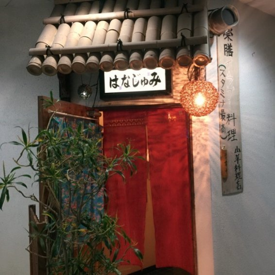
お店に入ると、居酒屋なのでまだ時間が早いのか、他のお客さんは誰もおらず。
「ヤギ汁が食べたいんですけど」
ママに頼むと、
「お姉さんヤギは初めて？」
と聞かれました。
ヤギには独特な臭みがあるということも聞いていました。その臭みで好き嫌いが分かれるのだとか。ただし北海道などに旅行に出かけて「ジンギスカン」つまり羊が食べられる人はヤギもいけるらしい。
私は旅先では基本的になんでも食べる人間。
「ヤギは初めてですが、羊は食べられます」
するとママは、
「それなら大丈夫だね。でも、やっぱり初めてなら少し量は少なめにした方がいいかな」
そう言って目の前のカウンター越しにヤギ汁を作ってくれました。
そして出されたヤギ汁がこちら。
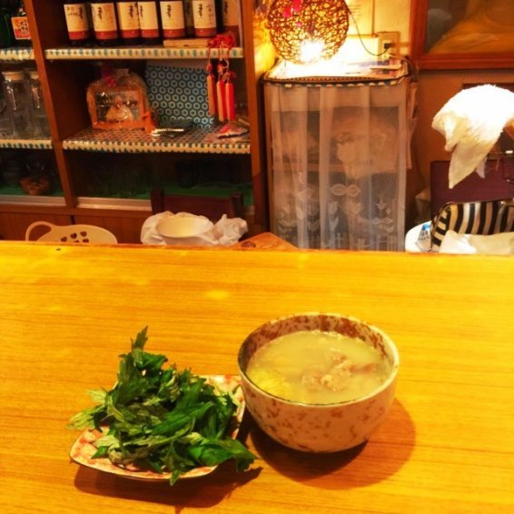
生のよもぎをお好みで加えて食べるそうです。
一口食べてみました。その瞬間に体がポカポカする。ヤギ汁には独特な臭みがあったのと、スープに生姜が効いているのとで、その二つが合わさって体を温めるのだとか。ママ曰く、「ヤギの肉には血流を良くする作用がある」のだとか。
確かに好き嫌いは分かれそうですが、それでも「好き」という人には徹底的に愛されそうな味。特に女子ウケしそうです。「冷え性改善」とか「体の中から温活」などのキャッチフレーズで健康意識の高い女性に人気が出そうなメニュー。
よもぎも匂いの強い食材です。しかしそのよもぎを入れると体の中からエネルギーが湧いてくる。味付けと匂いとが合わさって、元気になれる料理。
しかも結構ボリューミー。「量を少なめに作る」とママは言っていたけれど、このヤギ汁だけでお腹がいっぱいになりそう。心の満足度が高いのもあるかもしれません。一杯のヤギ汁でかなりの満腹感が得られます。
ヤギ汁を堪能し、お腹がいっぱいになった私は「ご馳走様です」と言ってお会計をしようとしました。
お会計をしようと財布を開けました。
「お金がない！」
さっき名護のイオンで一万円札を使って、お釣りが返ってきたはずなのに、財布にお金がない！
名護のイオンでの自分の行動が走馬灯のように脳裏を駆け巡りました。
「セルフレジでお札のお金をもらうのを忘れていた！」
すでに時間がだいぶ経っている。ヤギ汁も食べてしまった。ここでお金がないことに気づくなんて！
幸いお財布はあったので、キャッシュカードも手元にあって。ママに一言断って、近くのコンビニでお金をおろしてヤギ汁の会計は済ませました。
しかし私は激しく落ち込みました記憶の中では八千円ほどを名護のイオンに忘れてきてしまったことになります。恐らく次の人が持って行ってしまっただろう。もう私のところに帰ってくることはないだろう......。
八千円ほどのお金を名護のイオンに忘れてしまったことに気づいた私は激しく落ち込みました。しかしとりあえず宿に行かなければならない。すっかり集中力も切れてしまい、途中危ない運転をしたような気もしますが、なんとか無事に宿にたどり着きました。
夫に「ちょっと電話してもいい？ 泣き言聞いてー！ 『バカ』って言ってー！」とメール。すると「話は聞いてやる」と返事がきたので電話をしました。
「お金をなくしたの」
半べそ状態で夫に電話。
「いくら？」
「たぶん八千円くらい」
「どうして？」
「イオンのセルフレジでお会計をした時に、お釣りとして出てきた分を取るの忘れたの」
「それ、返ってくるんじゃないの？」
その言葉にびっくりしました。「え、どうやって返ってくるの？」と飛びついて聞き返しました。
夫曰く、イオンのセルフレジではお釣りの忘れ物などはレジ係員が管理しているとのこと。係員は忘れ物にすぐに気づいて回収して保管しているとのこと。
「いますぐイオンに電話しろ」
時計を見ると二十二時直前。名護のイオンが何時に閉店するかは分からないけれど、もしかしたらつながるかもしれない時間。
「分かった！ ありがとう！」
夫との電話を切って、今度はすぐに名護のイオンに電話をかける。
「今日お札のお釣りをセルフレジに忘れたかもしれないのですが......」
電話に出てくれた受付の男性に事情を話します。
何時頃に、いくらくらいの忘れ物をしたのかなどを聞かれました。私は会計時に小銭のお釣りは回収していたこと。お札のお釣りだけを忘れたということ。そういうことも細かく一つ一つに伝えていくと、
「該当時間に多額のお釣りの忘れ物がありました」
とのこと！ レジに残っていたのは七千円だったらしいけれど、それは記憶の誤差ということで深く追求されませんでした。
「レジデータと照合するために、ご購入いただいた商品を教えてください」
と言われたので、素直に答えることに。買ったものを一つ一つ思い出しながら男性に伝える。
「ちんすこうプレーン味二十個入り四百円を二パックと、......ちんすこうチョコレート味二十個入り四百円を一パックと、............ちんすこう紅いも味二十個入り四百円を一パックと、..................ちんすこう十個箱入り六百円を一箱。あと、沖縄ナッツを一パックです......」
対応してくださった男性に「こいつどんだけちんすこう買ってるんだ」とか心の中で突っ込まれそうな会計で恐縮。沖縄観光客あるあるなレシートかもしれないけど、これだけちんすこうばかり買っているということを他人に伝えるのは地味に恥ずかしい。
恥ずかしいけれど、お札のお釣りが返ってくるチャンスを逃せない。
「レジのデータと照合いたしましたら、お客様の証言と一致しましたのでお金をお返しします」
無事ちんすこうばかりのレジデータが役に立ってくれたので、七千円のお金は無事に帰ってくることに。
結局翌日名護のイオンまで取りに行くことになりました。十時開店ということだったので、それ以降に伺うという旨を伝えて。
本来ならば本島の南のビーチに行く予定でしたが、ここは致し方ない。ビーチは名護周辺に行くことにしよう。
無事にお金が返ってくることになり、私はとりあえず安心して布団に入ることができたのでした。
ちんすこうしか買っていないようなお買い物だったけど、それを覚えていたことにより無事にお金が返ってくることに。
沖縄観光ができるのが最後である月曜日、私は那覇から一時間半ほどかけて名護まで向かいました。道中で朝食を済ませて。名護のイオンでお金を返してもらうためには十時以降にサービスカウンターに行かなければなりません。この日は今回の旅行の中で一番のんびりとした朝を過ごしました。
しかし......疲れがマックスである。体がずっしりと重たい。気合いでここまでようやく観光をしてきた。この日はビーチに行く予定でもある。しかし、もう疲れた......。
「ええい！ せっかくの旅行じゃ！ 気合いを入れぃ！」
自分の体に鞭打って、「お金をもらったらビーチに行くんだ」という誓いを立てる。
そして朝の十時。イオンのサービスカウンターが開く時間。ほぼ同時と言ってもいいくらいの時間に私は行きました。
「昨日電話をした、セルフレジにお金を忘れた者ですが」
サービスカウンターの女性に言うと、すぐに帳簿を確認してくれました。
「七千円をお忘れになった鈴木様ですね」
本人確認をした上で、帳簿にサインを書いて。警備員さんが呼ばれ、お金を持ってきてくれました。
「結構な額だったから、無事に返ってきてよかったです。次にレジを使った人が持って行ってしまったかと思っていたから」
女性にそんなことを話すと、
「セルフレジにお札のお金を忘れていく人はあまり珍しくないんですよ。九千円とかが残っていることもよくあります」
忘れた本人としてはセルフレジに高額なお札のお釣りを忘れたら「なんで私はこんなにドジなんだ！」と自己嫌悪に陥るレベルの話ですが、お店としては珍しくない事象だとのこと。
とは言うものの、一時は「もう返ってこない」と諦めかけていたお金がちゃんと帰ってきたことに喜びを隠せない。そして同時にきちんと確認をして保管をしてくれていたイオンのレジ係員にも感謝の気持ちが溢れてきます。セルフレジで会計をする人、ひとりひとりをきちんと管理してくれていることが「すごいなぁ」と思ってしまう。
無事にお金が返ってきて、何度も「ありがとうございます」と言って。
残りの沖縄での時間を楽しむために、名護のイオンを後にしました。
お金が無事に戻ってきたところで、沖縄ビーチを満喫すべく車を走らせます。
「沖縄と言ったら海！ 白い砂浜！ 青い海！」
......なんてことは、愛知県及びサンゴ礁とは無縁の海ばかりを見ている人間が思うことではないでしょうか。その憧れの海に、ようやく向かいます。
勝手な認識ですが「沖縄はどこのビーチに行っても青い海と白い砂浜が見られる」と思っていました。帰ってきた今もそう思っています。北に行こうと南に行こうと、離島に行こうと、細かいことにこだわらなければすぐに「青い海と白い砂浜」は見つかる。
私は一人でビーチに行って何をしたいかというと、水着姿でのセルフポートレートと潮騒を聞きながら瞑想でもできたらくらいのことを考えていました。細かいことにこだわる必要なし！ グーグルで見つけたビーチに行けば十分！
天気は多少雲があるものの晴れ。前日のザーザー降りの雨は何処へやら。蒸し蒸しする空気が余計に私の海への欲求を掻き立てる！
本当は本島の南側に行く予定だったけど、名護まで来てしまった。名護周辺のビーチに行こう。......ということで名護周辺のビーチを検索！ 美ら海水族館付近のビーチを見つけました。ヒットしたところをナビで設定！
......ナビで設定しようとしても、地名の漢字が読めない......。
沖縄での旅行中、頻繁にあったこと。「地名の漢字が読めない」。だからナビがセットできない。沖縄は独特な漢字の読み方をするところが多く、読むのに慣れるまで時間がかかりました。
だからいざビーチに行こうとして、グーグルで検索してヒットしたビーチをナビに設定しようとしても、地名が読めないから入力もできない。
行き先の読み方が分からずナビをセットすることもできないので、仕方なしに「近くの地名が読める場所」らしき場所を入力。
そしていざ！ 車を走らせる。
ナビ曰く、セットした目的地までは車で一時間。
一時間ほど車を走らせました。車の左側には堤防越しに青い海が広がる。
......どうも周りの風景が、昨日も見たような気がする。この道、昨日も通ってない......？
一時間ほどしてそんな気がしてきました。
グーグルで検索して行こうと決めた場所は美ら海水族館の近く。名護からは北西に向かうことになります。
そして昨日行ったのは本当北端。名護からは北東方向。
どうも私は名護から北東方向に走っているような気がする......。
名護から車を走らせて一時間。ここで現在位置を確認。
......すると、一時間もの間、私は本島を北上していたことに気づきました。つまり昨日と同じ道を走っていた。つまりグーグル検索で見つけた目的地のビーチとは全然違う方向に車を走らせていた。
「どんだけ方向音痴なんだよ」
と、一人で突っ込んでみたけど虚しいだけで。
今更最初の目的地を目指す気にもなれず、仕方ないから近くのビーチに行こうという気持ちになりました。
細かいことにこだわらなければ、どこのビーチにも「青い海、白い砂浜」はあるので！
そんなこんなで車を名護の方向に向けて走らせました。「もうこの際だから道の脇にあるようなビーチでもいいや」くらいの気持ち。
そうやって車を走らせていると、あっという間にビーチが見つかりました。道路脇の堤防を下りれば小さなビーチがあるという場所。「Ｐ」という道路標識もあり、無料で誰にも迷惑をかけずに車を停めることもできる。
「もう探すのもめんどくせぇ！ ここでいいや！」
「Ｐ」の標識のある場所に車を停めて、「このビーチに決めた！」ということにしました。
そして見つけたビーチがこちら。
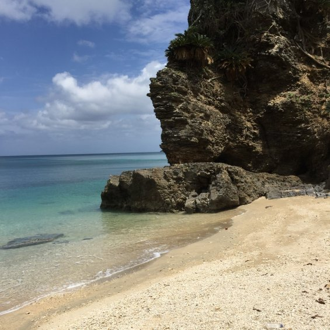
狭いけれど誰もいない。そしてやっぱり期待通りの青い海と白い砂浜。一人でのんびりするには丁度いい。セルフポートレートを撮るにしたって人目を気にしなくてもいい。
なんという名前の場所なのか分からないし、グーグルで検索してもヒットしないくらい人が来なさそうなビーチ。私自身、もう一度行けるかすらも分かりません。
車の中で水着に着替え、堤防の階段を下りて私はビーチに入りました。
そこでセルフポートレート撮影。
実は元から水着姿の写真をネットにあげるのが苦手なタイプの人間。ミスコンとかで水着姿の写真 を SN S などにあげてきたけど、いろいろな葛藤があったり。
それでも電子書籍という限られた人だけが見られる場所なら割と平気かもしれない......それはまだまだ私が売れっ子作家じゃないからかもしれないけど！
しかし暑い。四月だというのに沖縄は暑い。おまけに前日雨だったからか、この日は非常に蒸し暑い。海に入っても全然寒くないし、泳いでも平気なくらい。
潮騒を聞きながら瞑想？ そんなことできるわけがない。それくらいの暑さです。
そしてやっぱり疲れた！
もう私は疲れた！
この体を休めたい！
旅の根性？ もう十分だろう。ここまでやった。セルフポートレートも撮ったし、見たかった風景も見た！
そんなこんなでセルフポートレートで気に入った画が何枚か撮れたところでついに「旅先根性」も尽き果て、私はビーチを後にすることにしました。
もうクタクタでした。本当に体が重たい。一つ一つの所作をするのに時間がかかる。もうまじ無理。まじ辛い。ホントやばい。語彙もなくなるくらい疲れてやばい。
そんな状態で頭に思い浮かんだのは「銭湯に行こう」ということ。
宿泊しているホテルには大浴場などなく。安宿なのでそこは仕方ない。この時私が欲していたのは、広々としたお風呂に十分な温度。体の筋肉をほぐしてくれるようなジャグジーなんかもあったらいい。
そして一番求めているのはサウナ。じっくり汗を流して、体の疲れを癒したい。
ビーチを後にし、名護を通過し、那覇に戻る。そしてホテルにお風呂セットを取りに行き、近くのファミリーマートで沖縄限定おにぎりを食べながらグーグルで「那覇 銭湯」と検索。
心なしか、愛知県よりも銭湯の数が少ない気がしました。そして入湯料も全体的に若干高い？ 沖縄では「湯船に浸からない」ということも珍しくないと聞いています。だからなのだろうか......？
しかし一刻も早く私は疲れを癒したい。グーグル検索で出てきた「りっかりっか湯」に行くことにしました。ホテルの中の施設ですが、ホテル利用者以外の人でも入れるとのこと。
銭湯の目の前の駐車場に車を止めます。一時間五百円と駐車場の中では割高な印象。しかし銭湯に入って駐車券を出せば何時間か無料になる。何時間だったかは忘れてしまいました......。
「旅で溜まった疲れを癒すぞ！ 銭湯に入るぞ！」
喜びいさんで服を脱ぎ、いざお風呂へ！ まずは体と頭を洗います。本当に蒸し暑い日だったので、それまで体の表面に何かがへばりついていたかのような感覚でした。しかしお湯をかけるとあら不思議、そのへばりついていたものがサーッと流れていく。
シャンプー、リンス、ボディーソープで体を洗っていく。別にこの動作なんか前日の夜もやってたし、この旅行中毎日やってたし、なんだったら普段の生活の中でも当たり前にやってることですが、それでもこの時は「気持ちいいっ！」と感じました。もう、頭の中は銭湯モード。
体を洗い終わったらいよいよお風呂！
ジャグジーが充実しているお風呂でした。しかも水圧が結構強い。体をゴリゴリと押してくれます。
沖縄に来てからシャワーで過ごしていたので、久しぶりの湯船に気分も上がる。足をぐんと伸ばして、体の中の血液が巡るのを感じる。筋肉がほぐれる。汗も出る。このまま溜まった疲れも流れ出てくれ！
体を一通り温めたら今度はサウナに。
なんとジャグジーだけでなくサウナも充実している！ スチーム、ドライ、ソルトの三種類のサウナがありました。愛知県内で時々銭湯に行く私ですが、こんなにサウナが充実している銭湯は初めて見ました。
「とにかく汗をかくぞー！」
三つのサウナに、水風呂と交互に入ってみました。
サウナで過ごす時間が好きです。体の表面にぽつぽつと浮かんでくる汗を数えるかのような時間。頭の中が空っぽになって、悲しいことも全部忘れられる時間。心が無になる時間。そして軽くなる時間。
体の反応に敏感になります。サウナに入っている間は、「毛穴が開き、汗が流れ、血流が良くなる......」なんて考える。そして水風呂に浸かると「一気に縮む！」と体が叫んでいるのを感じる。体のあらゆるところが「開く」のと「閉じる」のを短い時間の間に繰り返す。その繰り返しによって溜まっていた悪いものがどんどん流れていく......。
ということを妄想するのが好き。本当に体がそうやって動いているのか、そして疲れの物質などが流れているのかは知らないけど。
サウナを満喫した後は、再び湯船に。今度は窓が開放されて外気にも触れられるお風呂に行きました。
......なぜかエクササイズしている人がいる。しかも二人も。湯船の段差を上ったり下りたりを繰り返している人と、激しくはないけれどバタ足をしている人。愛知でいたら「マナー違反」とか言われそう......沖縄だからでしょうか？
入ってみても落ち着かないから、その湯船は諦めて、別の湯船へ。
最後に入ったのはジェットバス。立って入るタイプのお風呂で、結構深い。身長が一七一センチの私でも腰まで入っていたような気がします。
入り口に「身長一三〇センチ以下のお子様はご遠慮ください」と書かれていました。
立ったまま湯船に入り、ボタンを押すとジェット噴射が始まります。
......強い。このジェット噴射、本当に強い。踏ん張っていないと流されてしまいそう。手すりにしがみついて、流されないように下半身に力を入れて。湯船に浸かっているのに筋トレをしているかのような。
そうしていろいろと文化の違いを感じさせられた入浴を終え、着替えて外に出ました。
なかなか激しいお風呂でした。しかし風呂好きにはたまらない。那覇市内に熱狂的なファンがいてもおかしくないお風呂。
外に出て、風に吹かれると、体が軽くなっているのを感じます。疲れであんなに体が重たかったのに、入浴後はスキップだってできちゃいそう。
駐車場から車を出し、レンタカーを返却します。借りる前にあんなに保障などを確認していた割に、安全運転ができていたのか、無事に何事もなく。
国際通りが近かったのでそのまま軽く散歩をして。気がつけばホテルも徒歩圏内。夕食はファミリーマートのおにぎり。
満足気分で布団に入りました。
宿で一晩寝て、火曜日の朝那覇空港に向かいます。いよいよこの旅も終わる時。
小さい頃は一週間やそこらだったら「もっと沖縄にいたいー！」みたいなことを言っていたような気がします。しかし二十八歳になった私は一晩寝ても疲れが取れず、連日フルで観光をしていてクタクタになってしまいました。特に従姉妹三女の結婚式以降の後半戦は気合で乗り切っていた部分もあります。
旅行となると、逆にのんびりできなかったりします。それはケチな性分もあるかもしれません。ケチだから「なかなか来られる場所じゃないからあれもこれも盛り込んでしまえ！」みたいな発想に取り憑かれている部分も多分にあると思います。もっとお金と時間に余裕のある生活をしていたら、「沖縄？ またすぐに来られるから今日くらいホテルでのんびりしてもいいんじゃないかしら。おほほ......」なんて言えたかもしれません。
とにかく、旅が終わりに近づくにつれて「早く愛知に帰ってのんびりしたい」と逆に思いました。
そして仕事が恋しかったというのもあります。旅行中は身近に他人がいたり、車を運転していたりと、文章を書く時間が確保できませんでした。
毎日更新しているブログも旅行中は更新できないこともしばしば。病んでいるのかもしれないけれど、ブログを毎日書く習慣が一度ついてしまうと逆に「書かない」というのが難しくなってしまう。一年以上ブログを書いてきた今の私にとって、ブログ更新は重要な習慣になっています。何気にこのブログ更新だけで年間十万文字（量が少なめの本一冊分）を世の中に発信していることにもなるし。そう思うとなかなか侮れません。
やっぱり私は文章を書くのが好きみたいです。「一文字も書かない日」というのは新鮮ではあるものの、何だか物足りない。ブログ更新というちょっとした文章でも、書いた日と書かなかった日とで気分に大きな差があります。
沖縄旅行から帰る飛行機の中で、「ようやくまた文章を書く日々に戻れる」とホッとしました。
旅先で、
「早く帰って仕事がしたい」
とか思っちゃう私は、とても幸せ者です。おかげさまでこの旅のあれこれもネタにしてこうして本にすることもできました。
飛行機の中で読書をして。家に帰ったらまずは従姉妹三女の結婚式の写真を整理し て LIN E のアルバムとして各方面に送信しました。
撮った写真を編集していたら、会社から夫が帰ってきて。
久しぶりの再会。玄関で出迎えてハグとキスをして。旅は楽しかったけれど、新婚だからか夫のことが恋しいという気持ちもあって。家に帰れば会えるのは当たり前。それでもこの時は「また会えたー！」という感動の再会を果たしてしまいました。
ハグとかキスをねだっていたら、夫に「犬かよ！」と突っ込まれました。
それ以降の日々は仕事モード。再び文章を書き続ける日々。
一週間後にはゴールデンウィーク。会社が長期休みになる時期に、長い旅に出るのが好きな夫。今年のゴールデンウィークもそのつもりで。普段なら私も誘って一緒に旅行に連れて行ってもらえますが、今年は五月一日に私が外せない仕事があったために私は家でお留守番ということになりました。
ゴールデンウィークは一人で家の中で過ごす。去年のこの時期に失敗を繰り返した酸辣湯にリベンジしたり（詳しくは こちらの 『 Chocolat e 』 記載）、仕事に専念したり。 『 Chocolat e 』もこのゴールデンウィーク中に大半の案をまとめました。
それでもひとりぼっちのお留守番はとても寂しくて。仕事は充実したけれど張り合いがない。夫と一緒に暮らし始めて八ヶ月。たかが八ヶ月、されど八ヶ月。夫がいる生活が当たり前になりすぎていて、いざ夫のいない生活をしてみると寂しさに押しつぶされそうな気分になってしまう。
寂しいけれど憎たらしいことに仕事は捗って。会社勤めのいつ帰ってくるか分からない夫に生活を縛られることなく、自由に仕事ができてしまう。だからいつもよりも濃厚な仕事時間を過ごせました。
それでもゴールデンウィークが終わる頃に夫が帰ってくると、再び「感動の再会」モードに。玄関で出迎えてハグとキスをして、「犬かよ！」と突っ込まれて。
お互い一人で過ごしている間に起こったことを話して。
寂しかったけど、ちょっとこの感動はクセになる。この感動のためにたまには一人になってみるのもいいかも......とも思ったけれど、まだまだ新婚なのかひとりぼっちで家にいるのは寂しくて辛いものです。
今回の沖縄旅行。ちゃんとミッションはクリアしました。観光を楽しんで、セルフポートレートを撮って、文章のネタにする。これだけできれば十分。
トラブルもあったけど、楽しい一週間弱でした。
四月に結婚式を挙げた大学時代の友達と従姉妹三女に幸あれ。
プロフィール
鈴木詩織......作家、モデル。一九九〇年四月生まれ。「有意義な暇つぶしを提供する」をモットーに活動中。